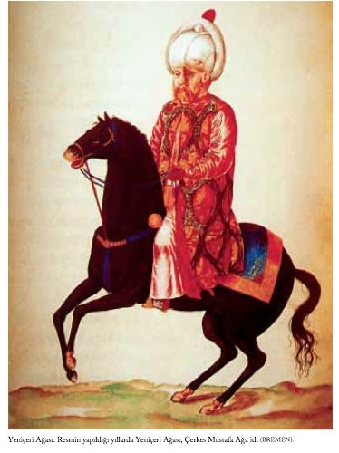

KENT
Kentin Genel Görünümü ve Panoramaları
Fynes Moryson, İstanbul gezisi sırasında İngiliz elçisi Master Edward Barton ’un evinde konuk edilmiş, kenti gezerken güvenliği için emrine bir de yeniçeri verilmişti. Moryson ’a göre o dönemde kent, kuzeyden güneye 15 km., doğudan batıya 8 km. uzanan bir dikdörtgen görünümündeydi. Moryson, kentin çevresini, kâh kayıkla, kâh yaya olarak dört saatte dolaşabilmişti [MORYSON 91].
Ramberti, İstanbul ’un 18 mil çapında olduğunu ve yedi küçük tepe üzerinde kurulduğunu söylemektedir. Görkemli saray ve câmiler sayılmazsa, evlerin çoğunun çamur veya tahtadan çok kötü yapılmış olmalarına, kent surlarının yıkılmaya bırakılmasına karşın, tüm dünyada o zamana dek var olmuş en güzel kenttir. Kentin içinde, bakımsız topraklarda selvi ağaçlarını ve başka ağaç türlerini fark etmiş Ramberti, ama tuhaftır ki bu ağaçların mezarlıkları gölgelediğini fark etmemiş [RAMBERTI 239].
Roma, Venedik, Napoli, Milano, Paris ve Lion ’u görmüş olan Pedro ’ya göre bu kentlerin hiçbiri İstanbul ’la yarışamazdı. İstanbul ’da büyük bir kentte olması gereken her şey bulunuyordu. Bütün bu Avrupa kentleri bir araya gelseler, İstanbul ’la yer, büyüklük, güzellik, ticaret ve bolluk açısından rekabet edemezlerdi. Aslında, İstanbul ’un tüm niteliklerini anlatmak için bir ömür yetmez [VIAJE 272-273].
Oldukça ılıman geçen kış mevsimi iki ay kadar sürer, kente hemen hemen hiç kar yağmazdı. Dernschwam ’ın İstanbul ’da kaldığı sürece sadece üç kez kar yağmış; bir keresinde yerden dört santim kalınlıkta tutmasına karşın, öğleye doğru tümüyle erimiş. Dernschwam, ülkenin diğer bölgelerinde kar yağarken İstanbul ’da ancak yağmur yağdığını; nemli havaya alışkın olmayan birçok yabancının bundan rahatsız olduğunu söyler [DERNSCHWAM 49].
Sanderson, 1594 yılında kentin eski surları içindeki yedi tepe üzerindeki binaları betimliyor. Edirne Kapısı ’ndan giren yolcular Belisarius Sarayı ’nın kalıntılarıyla karşılaşırdı. Bu kapıya yakın III. Murad ’ın annesi için yaptırılmış küçük ama güzel bir câmi vardı.
İkinci tepenin üzerinde, bazı Bizans imparatorlarının mermer mezarlarının olduğu, Fener ’e bakan St. Mary Pammakaristos Kilisesi vardı, birkaç yıl öncesine kadar. İstanbul Patriği’nin evi bu kiliseye yakındı.
Fâtih Sultan Mehmed Câmii ve Türbesi üçüncü ve en yüksek tepedeydi. Sanderson, Türklerin böylesine görkemli binalar yapabileceklerine inanamamış; çünkü Türklerin sanatta değil, savaşta usta oldukları kanısındaymış. Biçim olarak bu câmi Ayasofya ’nın bir eşiydi. Yakınında din ya da ulus ayrımı gözetmeksizin tüm yolcuların üç günlüğüne ücretsiz yiyecek ve yatacak yer bulabildikleri kubbeli yüz oda vardı. Ayrıca fakirler için 150 imâret bulunuyordu. Bunlar adam başına günde birkaç akçe dağıtır ve ayrıca ücretsiz yemek verirlerdi. Câmi çevresinde, muhtaçlara yardım kompleksi içinde bir akıl hastahanesi, ücretsiz ilâç dağıtan bir hastahane, öğrenciler için okullar, yurtlar ve hamamlar vardı. Sultan Mehmed Vakfı’nın sağladığı kiralardan câmiye yılda 60.000 düka yardımda bulunuluyordu. 1594 ’te kiralardan toplanan para 200.000 dükayı geçiyordu. Ayasofya ’nın, bedestenlerin, kentteki tüm büyük dükkânların, Topkapı Sarayı ’nın gelirleri bunun içindeydi. Bu gelirden câmiye günde 1001 akçe ödeniyordu.
Dördüncü tepede Sultan Süleyman ’ın babası I. Sultan Selim Câmii ve Türbesi vardı. Bu câmi, öteki büyük câmilerle karşılaştırıldığında, daha yalın bir biçimde yapılmıştı.
Selim ’in babası Sultan II. Bayezid Câmii ve Türbesi beşinci tepedeydi. Önünde büyük bir boş alan vardı.
Altıncı tepede en görkemli câmi ve türbe Sultan Süleyman ’ınkiydi.
Yedinci tepede ise şimdi câmi olan eşsiz güzellikteki eski Ayasofya yer alıyordu [SANDERSON 69-71].
Bunun dışında da birçok güzel câmi vardı. Şehzâde Câmii, Süleyman tarafından oğullarından birinin anısına yaptırılmıştı. Sanderson ’un Katolik râhiplerinin manastırlarına benzettiği Yeniçeri Kışlası da bu câmiye yakındı. Câmi yaptıran büyük isimler arasında Mehmed Paşa, Davut Paşa, Rüstem Paşa ve Hadım Mesih Paşa sayılabilir. Sanderson ’un zamanında Sinan Paşa, Çemberlitaş yakınında bir câmi yaptırıyordu; Cerrah Mehmed Paşa ise Avrat Pazarı ’nda [SANDERSON 72].
Gerlach, İstanbul ’un çok sayıda mahalleye veya bölgeye bölündüğünden söz ediyor. Her mahallede belli sayıda konut vardı. Câmi veya kiliseler de bu mahallelerin içinde sayılırdı. Her kilisenin bir râhibi, her câminin de bir imâmı vardı [GERLACH 359].
Kentin suyu, çevredeki dağ ve vadilerde Bizanslılar zamanında yapılan bentlerden getirilirdi [DERNSCHWAM 4]. Sultan Süleyman son yıllarında İstanbul kentine Belgrad Ormanları’ndan su getirecek olan ve Sinan tarafından yapılan kemerli su yollarının tamamlanışını gördü. Tepelerden gelen su, yeraltı su kanallarıyla kare yontma taşlardan sağlam bir biçimde yapılan sarnıçlara yollanıyordu. Buradan da kemerler arasından geçerek su yoluna ulaştırılıyordu. Gerlach ’a göre, su böylece 3.5 Alman mili yol almış oluyordu. 8 Ocak 1577 ’de Gerlach bunları görmeye gider. Anlattıklarına bakılırsa, dört büyük ve birçok küçük su yolu vardı. Büyük olanlardan birinci ve ikincisi iki katlıydı. Bunlar kemer payandasıyla, üçüncüyse üç katla desteklenmişti. Her üç su yolunun üzerindeki katta yürünebiliyordu. Bunları ayakta tutan kare biçiminde yontma taşlardan yapılmış duvarlar 20 ayak kalınlığındaydı. Dördüncü su yolu üçüncüden güzel bir çayırla ayrılıyordu ki burada bir de Rum köyü vardı. Bu su yolunun yüksek kemer ve payandaları ve iki katı vardı [GERLACH 302].
Pedro ’nun dediğine göre İstanbul sokaklarının hiçbirinin adı olmadığından, gidilecek yeri kolayca bulmak için semtin adını ya da çevredeki herhangi bir câminin adını vermek yeterlidir. Çarşılara gelince, orada en çok satılan malın adıyla anılırlar, Tavuk Pazarı (Taucbazar), Balıkpazarı (Balucbazar), Koyun Pazarı (Coinbazar) gibi [VIAJE 271].
Fugger ’in 1589 yılı belgelerinde İstanbul ’da, üzerinde câmi bulunan 4492 geniş sokak, 2185 tane de üzerinde câmi bulunmayan dar sokak yer aldığı belirtilir. Bu arada 442 kilise, 100 hastahane ile düşkünler yurdu, 895 hamam, 942 sebil, 275 ekmek fırını, 585 un değirmeni, yiyecek ile başka çeşitli mallar satılan 20 çarşı, 15 han, 418 kervansaray, 115 değişik okul, medrese, 165 ilkokul vardır. Çevresi 18 mili (=3 Alman mili) bulan kentin surlarında 24 kapı, 360 gözlem kulesi bulunur [FUGGER 129].
Sanderson ve Moryson eski İstanbul kentinin Marmara Denizi ’nden Haliç ’e açılan 11 kapısı olduğunda birleşiyorlar. Bunlar Yedikule Kapısı (Aurea), Silivri Kapı (Pagea), Topkapı (S. Roma), Edirne Kapı (Carthasco), Yeni Mevlevîhane Kapı (Regia), Eğri Kapı (Caligaria), Odun Kapısı (Xilina), Haringna Kapı (Haringna), Fener Kapı (Phara), Aya Kapı (Theodosia), Cibali Kapı (Siliaca) [SANDERSON 79 - MORYSON 264].
Yüzyıllar boyunca depremler ve yangınlar kent duvarlarına ve kapılarına büyük zarar verdi. 1509 ’da, Sultan II. Bayezid ’in hükümdarlığı sırasında çıkan yangın 18 gün sürdü. 13.000 ’in üzerinde insan öldü. Kent surlarının büyük bir kısmı yıkıldı. II. Bayezid, surları ve tamamı 24 tane olan deniz ve kara kapılarını yeniden yaptırmak için 60.000 işçi çalıştırdı. Daha sonra, III. Murad ’ın annesi, yaptırdığı ve destek sağladığı halka açık hamamlara kolay ulaşılsın diye yeni bir kapı açtırdı. Sanderson kendi zamanındaki 25 kapının adlarını, Sultan’ın sarayına yakın olan kentin doğu kapısından başlayarak sıralıyor: 1. Çıfıt Kapısı, 2. Balıkpazarı, 3. Yemiş İskelesi, 4. Odun Kapısı, 5. Yeni Kapı, 6. Un Kapanı, 7. Cibali Kapısı, 8. Aya Kapı, 9. Yeni Kapı (Vâlide Sultan ’ın yaptırdığı), 10. Petri Kapısı, 11. Fener Kapı, 12. Balat Kapısı (Bizans imparatorlarının baş kapısı), 13. Ayvan Saray Kapısı, 14. Eğri Kapı, 15. Edirne Kapı, 16. Topkapı, 17. Silivri Kapı, 18. Yeni Kapı, 19. Yedikule, 20. Narlı Kapı, 21. Samatya Kapı, 22. Yeni Kapı, 23. Kumkapı, 24. Çatladıkapı ve 25. Ahırkapı (Sultan’ın atlarının bulunduğu yer).
Ayvan Saray, kemerli saray anlamına geliyor. Bu kapıya aynı zamanda Eyüp Ensari Kapısı da deniyor. Çünkü burada 668 ’de Araplarca kuşatmada öldürülen Peygamber ’in sancaktarı Eyüb ’ün türbesi var. Sanderson, Eyüb ’ün, İncil ’de sabrıyla tanınan Eyüb olduğu yanılgısına düşmüştür. Sanderson bu kutsal türbenin yanına birçok paşa ve diğer önemli kişilerin gömüldüğünü yazıyor [SANDERSON 81]. Sanderson ’a söylendiğine göre kent duvarları içinde 18.000 ibadet yeri vardı. Ancak Sanderson gerçek sayının 8-9 bin arasında olduğuna inanıyor. Buna 100 ’ün üzerinde kilise ve sinagog da dahil. Ayrıca, Galata ’da 4 ya da 5 Katolik kilisesi, Katolik keşişlerine ait 2 veya 3 manastır da vardı. Bunlardan başka, birçok Rum kilisesi bulunuyordu. Paskalya yortusundan önceki cuma günü, Rum keşişler de Katolikler gibi kendilerine eziyet ederlerdi. Hıristiyan kiliselerinde çanlara izin verilmiyordu [SANDERSON 69].
İstanbul ’a gelen yolcular arasında Lubenau ’nun yaptığı bina sayımı belki de yapılanlar arasında doğruya en yakın olanıydı. Ona göre, 44 Rum kilisesi ve 70 Yahudi okulu vardı. Câmi ve mescitlerin sayısı 485, liseye denk medreselerin sayısı 625, yüksek okula denk medreselerin sayısı 515 idi. 110 hastahane, 419 imâret (yemek dağıtılan kuruma ait yapı), develer için 150, arabalar için 12 kervansaray vardı [LUBENAU 168].
Don Pedro, İstanbul ve Galata ’da birkaç bin câmi, hamam ve Rum kilisesi olduğunu tahmin ediyordu. Nüfusu ev sayısına bakarak hesaplamıştı. Ona göre 60.000 Türk, 40.000 Hıristiyan ve 10.000 Yahudi evi bulunuyordu. Ayrıca İstanbul ve Galata ’da 10.000 ev daha vardı. Bunlara Haliç ’in kıyısındaki Rum balıkçılara ait kırık dökük evler de dahildi [VIAJE 493]. Hepsi çok güzel inşa edilmiş, damları kurşun kaplı 300 ’den fazla câmi bulunuyordu. Ayrıca 100 ’den fazla hamam, kervansaray ve imâret vardı [CANAYE 93].
Wratislaw ’a göre büyük câmilerin hemen hemen hepsi Ayasofya planına göre inşa edilmiş, hayranlık uyandıran yapılardı. Kentin sokaklarının dar, evlerinin kötü olmasına karşın, Türklerin câmi, hamam, hastahane ve kervansaray yapımına çok para harcadıkları ve şahane binalar yapabildikleri görülüyordu [WRATISLAW 157].
İstanbul ’da câmiler ve Sultan’ın sarayı dışında pek az bina taştan yapılmıştı. Birçok ev Türk tarzında inşa edilmişti. Bunlar tahtadan veya kötü fırınlanmış tuğladan yapılmıştı. İki ya da üç kattan yüksek bina yoktu. Kent içinde selvilerin ve diğer ağaçların, büyük ve güzel bahçelerin olduğu boş alanlar vardı [CHESNEAU 25].
Birçok tanık, câmi, hamam, imâret, türbe gibi halka açık yapıların çok güzel binalar olduğunda birleştikleri gibi, paşaların ve önemli adamların evlerinin manastır gibi tek başına durduğu, sağlam duvarları, yüksek çatıları, büyük holleri olduğu, ancak bunların özensiz inşa edildiği konusunda aynı görüştedir. Zenginlerin evleri bile taş ve kireçten yapılıyordu. Alman evleriyle kıyaslanamazlardı bile. Türk ve Yunan ustalar Alman ve İtalyan tarzında ev yapmayı bilmiyorlardı. Türkler için yağmur, rüzgâr ve kardan korunmak yeterliydi. Daha başka beklentileri yoktu. Ayrıca taş sıkıntısı vardı. Taş, eşek sırtında taşınıyordu ve 100 eşek ancak iki araba dolusu taş taşıyabildiğinden inşaatlar pahalıya mal oluyordu. Bu nedenle Avrupa ’da 200 ya da 300 gulden arası olan orta karar bir ev İstanbul ’da 1.000 dükaya çıkıyordu. Çatıları kiremit kaplı evlerin büyük yuvarlak mazgalları ışık alsın diye camlıydı. Ancak pencereleri, evin içi komşuların gözlerinden uzak olsun diye tahta panjurlarla kapanırdı. Evlerin içinde tahta işine ve mobilyaya çok az yer verilirdi. At dışında hayvan beslenmezdi. Hayvanlar için bir ahır, insanlar için iki oda olurdu. Schweigger, evlerin çok ilkel koşullarla ayakta tutulduğunu yazıyor. Çünkü ısıtma düzeni yoktu, ocaklar vardı; kiler ve ahırlarda havalandırma düzeneği de yoktu [SCHWEIGGER 104-107].
İstanbul ’daki yapılaşmaya da, yangınların önlenmesi, limana gelen gemilerden boşalan yük trafiğinin aksamaması, anayollarda yayaların ve atlıların geçişine, kenti çevreleyen surları kapılardan giriş ve çıkışa engel olunmaması için bir takım kısıtlamalar konmuştu. 1558 ’de çıkarılan bir karar surların çevresinde yapıların yapılmasını yasaklıyor, güvenlik açısından tüm pencerelere kepenk konması zorunluluğunu getiriyordu [AR 58-59]. 1559 ’da çıkan bir kararda ise Galata ’daki tüm yapılarda taş kullanılması ve kepenk takılmaması buyruluyordu [AR 59-60]. Dîvân kararları, yapılarda kullanılacak keresteyi bile, tür ve nitelik olarak saptıyor [AR 64-65], yapılardan sorumlu kişilerin işten anlayan ehil kişiler olması zorunluluğunu da getiriyordu [AR 61].
Canaye ’nin İstanbul ’da kaldığı süre içinde Sultan, Ayasofya ’ya yakın tüm binaları yıktırdı. Diğer câmilerde olduğu gibi Ayasofya ’nın da çevresini bahçe ile donatmak istiyordu [CANAYE 99].
Panoramalar
En eski ve ayrıntılı İstanbul panoramalarından biri 1559 tarihli Melchior Lorichs ’in çizimidir. Kâğıt üzerine sepya ve siyahla çizilmiş panoramada, yer yer yeşil ve pembe dokunuşlar görülür. Eni 0.450 m., uzunluğu ise 11.275 m. ’dir. Hollanda’da bulunan bu dev panorama İstanbul ’u göstermekte, Üsküdar ve Galata ’yı kapsamamaktadır. 21 paftadan oluşur. 11. pafta sanatçıyı arkadan Galata ’da resmini yaparken göstermektedir. Lorichs’in yanında Osmanlı yardımcısı vardır. Bir elinde mürekkep ya da boya hokkasını, öteki elinde Lonichs’in mührünü tutmakta. Bu elinden başlayarak yukarıya doğru gidilirse Şehzâde Câmii’nin solunda bu mührün basılmış olduğu görülür. Resim, Haliç, Boğaziçi ve Marmara Denizi ’nin birleştiği noktadan başlar ve kentin en batısında biter. Çok bozulmuş olan bir paftanın büyük olasılıkla bugün Eminönü diye bilinen yer olduğu söylenebilir. İlk pafta Üsküdar ’dan çok küçük bir kesimle Kız Kulesi ’ni göstermektedir. 1. paftadan 6. ’ya kadar olanlar en önemli kesimlerdir. Topkapı Sarayı, Ayasofya buradadır. 8. pafta Çemberlitaş, Elçi Hanı ve Atik Ali Paşa Câmii ’ni göstermektedir. 9. pafta Bayezid Câmii ’ne ayrılmıştır. 10. pafta Süleymaniye Câmii ile Eski Saray ’ı göstermekte ve böylece panorama batıya doğru uzayıp gitmektedir. Çoğu paftalar çok bozulmuştur: özellikle 2, 4, 5, 10, 16, 18, 19, 20 ve 21. paftalar. Kimi paftada yer alan uzun yazılarda binaların ne oldukları gösterilmiştir. Kitabın ilk baskısında önemli bir kesimini katlanan sayfalarda göstermiştik. Bu baskıda bundan vazgeçip Câmiler bölümünde bunlardan birkaç tanesini aldık.
Viyana Albümü’ndeki [VİYANA I] üç panorama İstanbul ’un üç kesimini de göstermektedir: İstanbul yakasının Galata ’dan görünümü, Galata ’nın İstanbul ’dan görünümü ve Üsküdar. İlk panorama esas albümden ayrılmıştır. En ayrıntılı ve en güzelidir. Öyle ki Marmara ’nın güney kıyısını Adalar, Üsküdar ve Kadıköy ’ü Haydarpaşa ve Fenerbahçe ’ye kadar göstermektedir. İstanbul kesimi Sarayburnu ’ndan başlar. Topkapı Sarayı ’nı ayrıntılarıyla görürüz. Aya İrini ve Ayasofya, Çemberlitaş, Elçi Hanı; Atik Ali Paşa, Mahmud Paşa ve II. Bayezid câmileri, yüksek duvarları ve içindeki köşklerle Eski Saray üçgen biçimi yüksek duvarlarla çevrilidir. Bu duvardan başlayarak hemen sağda Süleymaniye Câmii ’nin görkemli görünümü yer alır. Bundan sonra Şehzâde Câmii ile Bozdoğan Kemeri gelir. Arkada Yedi Kule ve Arkadius Sütunu, daha sağda Fâtih Câmii ve I. Selim Câmii bulunur. Panorama, Tekfur Sarayı, Eyüp ve duvarların ötesindeki mezarlığa kadar uzanmaktadır [Bkz.: s. 32-33].
İstanbul ’un karşısında, Haliç ’in kuzey kıyısında, soldan sağa, Tersane ’yi görüyoruz. Kasımpaşa ’daki bu tersanede kemerli bölmelerde 120 yelkenli gemi barınabilmektedir. Üstteki yeşil alan Okmeydanı ’na kadar uzanmaktadır. Tersane ’den sonra Galata gelir. Üçgen biçiminde duvarlarla çevrelenmiş, üçgenin tepe noktasında Galata Kulesi yer almıştır. Onun sağındaki beyaz, yaygın bina günümüzdeki Galatasaray Lisesi ’dir. Bugünkü bina oldukça yeni olmakla birlikte burası II. Bayezid çağında Acemioğlanların okulu olarak yaptırılmıştı. Galata ’daki bütün binalar, kiliseler, câmiler seçilebilmektedir. Bu arada Kılıç Ali Paşa ve tepede tek minareli Cihangir Câmii görülmektedir.
Viyana Albümü’ndeki panoramada üçüncü kesim Üsküdar ve Kadıköy ’ü göstermektedir. Burada câmiler, binalar ve bunlar içinde en önemlisi Üsküdar Sarayı ve sağ köşede Sultan I. Süleyman ’ın yaptırdığı Kavak Sarayı... Denizde de ünlü Kız Kulesi ’ni görmekteyiz.
Viyana Albümü’yle karşılaştırıldığında ilginç sonuçlara ulaşıldığı için bu kitaba aldığımız yerli bir sanatçı tarafından yapılmış tek İstanbul panoraması veya planı, ünlü matematikçi, tarihçi, minyatür ressamı, kısaca Matrakçı Nasuh diye bilinen Nasuh üs-Silâhî el-Matrakî ’nin 1537/38 tarihli Beyân-ı Menâzil-i Sefer-i Irakeyn (İstanbul Üniversitesi Kütüphanesi T. 5964, 1537-38) adlı kitabındadır. Bu kitabında Anadolu, Irak, İran ’daki kentleri, başka kitaplarında da Macaristan ve Fransa ’ya kadar Akdeniz kentlerini çizmiştir. Buraya aldığımız İstanbul planı eşsizdir. Pek çok yayında, bu arada bu kitabın yazarının da iki kitabında kullandığı bu planda İstanbul, hem kuşbakışı, hem de binaların karşısından gösterilmektedir. Hiçbir plan Matrakçı ’nınki kadar ilgi toplamamıştır. İstanbul planı İstanbul ’u, Galata ’yı ve Üsküdar ’ın küçük bir kesimini göstermektedir.
Viyana Albümü’ndeki panorama ile karşılaştırınca Matrakçı ’nın planının üstünlüğü kenti yukarıdan da çizmiş olmasıdır. Böylece Viyana Albümü’nün göstermediği İstanbul ’un Marmara Denizi ’ndeki güney kesiminin Matrakçı ’nın planında bulunmasıdır. Böylece Matrakçı ’nın planında, örneğin At Meydanı ’nı, İbrahim Paşa Sarayı ’nı, Bedesten ’in bütününü, Kadırga Limanı ’nı ve çeşitli binaları bulmaktayız. Özellikle Kadırga ’daki tersane, Kasımpaşa ’dan sonra ikinci önemli tersanedir. Buna karşın, Süleymaniye Câmii henüz yapılmadığı için Matrakçı ’nın planında yer almamaktadır. İki panorama arasında benzerlik çoktur. Her iki resimde kurşun kaplı damlarla kiremit kaplı olanlar renk farkıyla gösterilmiştir. Bugün kendilerinden hiçbir iz kalmamış bazı önemli binalar her iki panoramada da gösterilmiştir. En iyi örnek Eski Saray ’dır. Matrakçı, binaları önemlerine göre, boyutlarını da bu öneme göre ölçek dışı olarak çizmiştir. Viyana panoramasında ise binalar ölçeğe uygun olarak çizilmiştir. Böylece her iki panoramada binalar biçim bakımından doğru çizilmelerine karşın boyut ve konumları Viyana panoramasında daha doğrudur.
İstanbul ’dan bir başka görünümde ise (Bibliothèque Nationale de Paris, Cabinet des Estampes, Res. B. 10 ’da) Lorichs ’inki gibi kent Haliç ’in kuzey kıyısında resmedilmiş. Solda ya da batıda Sultan’ın sarayı var ve Ayasofya resme alınmamış. Bu belgenin tarihi hakkında bilgi yok. Süleyman ’ın türbesi (Kanûnî) ve Rum patriği sarayı bu belgenin 1566-1582 tarihleri arasında yazılmış olduğunu gösteriyor. Bu panoramayı almadık.
Kitaplarda rastladığımız basit çizilmiş, siyah beyaz üç panorama daha vardır. Bunların ilki Schweigger ’in kitabındandır [SCHWEIGGER 102]. Belli başlı şu nirengi noktalarını göstermektedir: A. Burma Dikilitaş; B. Elçi Hanı; C. Topkapı Sarayı; D. Ayasofya; E. Çemberlitaş; F. Bayezid Câmii; G. Yeni Sultan Mehmed Câmii; H. Ermeni Patrikhanesi; I. Arkadius Sütunu; K. Konstantin Sarayı; L. Rum Patrikhanesi; M. Süleymaniye Câmii; N. Eski Saray; O. Yedikule; P. Ayvansaray; Q. Tersane; R. Kız Kulesi; S. Bedesten; T. Galata; V. Üsküdar; X. Kadıköy; Y. Marmara Adaları; Z. Marmara Denizi; 1. Mezarlık; 2. Surların dışı; 3. Eski Sultan Mehmed Câmii; 7. Karadeniz; 8. Bir hamam; 9. Boğaziçi; 10. Haliç.
İkinci plan Heberer ’in kitabından alınmıştır [HEBERER]. İstanbul ’u geniş açıdan kuşbakışı olarak göstermektedir: Kent, Haliç, Boğaziçi ’nin iki yakası, Karadeniz. Kentten daha çok kırsal kesime önem verilmiştir. Kimi nirengi noktaları ölçek dışı olarak büyük gösterilmiştir. Karadeniz ’deki Pompei Sütunu ve Fener, Boğaz ’ın iki yakasındaki hisarlar gibi. Heberer bunu Boğaziçi ’nden Karadeniz ’e çıkarken aceleyle yapmıştır.
Bu baskıya almadığımız bir başka planı Moryson çizmiştir. Bu, aslında çok orantısız ve çarpık bir harita olmakla birlikte belli başlı noktalar yerli yerine oturtulmuştur. Harflerin açıklaması şöyledir: A. Kentin 16 mil uzağında gemilerin güvenliği için bir fener; B. Kayalar üzerinde Pompeius Sütunu diye adlandırılan mermer sütun; C. Karadeniz; D&E. Kentin 8 mil uzağında Rumeli Hisarı ve Anadolu Hisarı; F. Gemilerin demir attığı liman; G. Haliç ’in iki kıyısında gemilerin palamarla bağlandığı yerler; H. Galata: İngiliz, Fransız ve Venedik elçileri burada oturmaktadır. İngiliz Elçisi Edward Barton evini Galata ’nın tepesindeki bahçeli güzel bir eve taşımıştır; I. Tersane; K. Tophane; L. Üsküdar; M. Vâlide Sultan ’ın bahçesi; N. İzmit Körfezi; O. Topkapı Sarayı; P. Şölen Köşkü; Q. Ayasofya; R. Dünyanın sayılı harikalarından Süleymaniye Câmii ve Kanûnî ’nin Türbesi; S. Büyük ve Küçük Bedesten; T. Yedikule; V. Konstantin ’in Sarayı ’nın yıkıntıları; W. Çanakkale Boğazı ’nda iki hisar [MORYSON 91-105].

Nüfus ve İstanbul Halkının Oluşumu
Kentin büyük çoğunluğu Türk ’tür. Ancak İspanya, Portekiz ve Almanya ’dan sürülmüş çok sayıda Yahudi İstanbul ’a yerleşmişti. Esnafın büyük çoğunluğunu da Yahudiler oluşturuyordu. Türkler, Yahudilerden birçok beceri öğrendiler. Hıristiyan nüfusu, temelde, yerli Rumlar, tüccarlar, Venedikliler, Floransalılar gibi ticaretle uğraşanlar oluşturuyordu. Başka ülkelerden gelen az sayıda Hıristiyan, Galata adıyla da anılan, kentin dışında ve Haliç ’in en uç noktasında kurulmuş olan Pera ’da yaşardı [CHESNEAU 31].
1553 yılının vergisiyle ilgili rakamlar kentte kadın ve erkek 15.053 Yahudi ’nin yaşadığını gösterir. Gerlach ise, bu rakamın 30.000 olduğunu; bunun da 10.000 ’inin Marunî Yahudiler olduğunu, Ermeni, Rum ve Karamanlı Rum Hıristiyanlar ın sayısının ise 6.785 ’i bulduğunu söyler [GERLACH 30].
Pedro, bir süre önce Sinan Paşa ’nın buyruğu ile yapılan bir ev sayımından söz eder. Bu sayıma göre Hıristiyanlar kırk bin, Yahudiler on bin, Türkler ise altmış bin evde yaşarlardı. Bu sayı kent dışında bulunan on bin küçük tahta ev ile Rum balıkçılarının Haliç kıyısındaki kulübelerini kapsamıyordu [VIAJE 269].
1596 ’da Leonardo Dona İstanbul ’un nüfusunu 600.000 olarak hesaplamıştı [SENECA 303]. Giovanni Moro ’ya 1590-1593 yılları arasında, İstanbul ’da nüfusun 1 milyon olduğu söylenmiş. Ancak Moro ’ya göre bu sayı 800.000 ’e yakınmış [RELAZIONI, 14].
Sanderson yerel bir kaynağa dayanarak nüfusu 1.231.207 olarak gösteriyor ve dökümünü veriyor [SANDERSON 82, 93].
İstanbul ’un 16. yüzyılda da sorunu olan nüfus artışı, öncelikle besin sorununun çözümlenmesini gerektiriyordu. Bu bakımdan özellikle et dağıtımını düzenlemek için 1575 ’te Dîvân ’ın çıkardığı bir kararla o sırada İstanbul ’da bulunan kasap dükkânlarından başka kasap dükkânı açılmasını [AR 92], Ramazan ayı dışında kasaplardan başka kimselerin koyun kesmesini [AR 93] ve Hıdrellez ’den önce kuzu kesimini [AR 98], bunun yanı sıra üst düzeydeki devlet memurlarının gereksinimlerinden fazla koyun almasını yasakladı [AR 95]. 1581 ve 1584 ’te çıkarılan kararlarda hayvanların İstanbul ’a nasıl getirileceği [AR 96-98, 98-100], 1585 ’te ise et fiyatları belirtildi [AR 101-102]. 1567 ’de de yine bir Dîvân kararıyla koyun satışlarında fiyat hayvanın türüne, yaşına ve sayısına göre saptandı. Hayvanların boğularak değil, kesilerek öldürülmesi bir kez daha zorunlu kılındı [AR 89-90].
Kışın çok soğuk geçtiği 1573 yılında İstanbul ’a un getirilmesi güçleştiğinde ekmek fiyatları bir Dîvân kararıyla artırıldı [AR 91].
Nüfus artışı karşısında besinden sonra ikinci önemli sorun kentteki düzenin korunabilmesi, hırsızlıktan öldürmeye kadar çeşitli suçlara karşı kentte etkin önlemlerin alınmasıydı. Bu arada İstanbul ’a akın çoğalmıştı, taşradan toplanan vergilerde de bir düşüş görülmekteydi. 1567 ’de alınan bir Dîvân kararıyla Rumeli ve Anadolu ’dan İstanbul ’a gelen halkın başıboş dolaşmaması için belirli bir biçimde kaydedilmesi ve İstanbul ’un yerli halkı olarak benimsenmesi için kentte en az beş yıl yaşamış olması gerekiyordu [AR 139-140]. Kentin düzeninin bozulmaması için 1574’te çıkarılan bir başka kararla önlemler daha da artırıldı. Örneğin, İstanbul ’a akın eden dilenciler ve dervişler [AR 143-44] ve özellikle Arap fakirleriyle [AR 143-44] ilgili olarak alınan kararlarla, bunların başıboş bir biçimde dolaşması önlenmeye çalışılıyordu.
İstanbul ’da yaşayan Müslüman olmayan halka, Müslümanlara kıyasla birtakım kısıtlamalar getirilmişti. Örneğin, 1577 ’de çıkarılan bir Dîvân kararı Yahudilerin ve Hıristiyanların Müslümanlarla aynı tip giysi giymelerini yasaklıyordu [AR 51]. Yine bir başka Dîvân kararı, Yahudiler in ve Hıristiyanlar ın Müslümanlar gibi türban takmayıp, Yahudiler in kırmızı, Hıristiyanların siyah takke giymesini öngörüyordu [AR 51-52]. 1568 ’de çıkarılan bir başka Dîvân kararında da Müslümanlar ın giyeceği kadın ve erkek giysileri kapsamlıca belirtilmişti [AR 47-48].
Şeyhülislâm Ebussuud Efendi, Müslüman halk ile Müslüman olmayan halka uygulanan bu ayrımın yalnızca insanların giyeceği giyeceklerle kalmayıp bir fetva ile hayvanlara da uygulandığını söyler [E. 402]. Örneğin, bir Müslüman ’ın atıyla bir Yahudi ’nin ya da bir Hıristiyan ’ın atı aynı biçimde bezenemezdi. Çingenelerin at yetiştirmesi, at sahibi olmaları, ata binmeleri bile yasaklanmıştı. Bunlar ancak eşeğe biner, arabalarına eşek koşabilirlerdi [AR 147].
Bir dönem Müslüman olmayan kimselerin köle satın almaları bile yasaklanmıştı [AR 51].
Dîvân, bir kilisenin bulunduğu yeri onaylamazsa ya da kilisenin izinsiz büyütülmesi, yapısında değişiklik yapılması durumunda yalnızca ilgilileri cezalandırmakla kalmaz, kiliseyi de yıktırırdı. Bu konuya örnek olarak, 1563 ’te Ermeni Kilisesi (Sulu Manastır) [AR 46-47], 1564 ’te [AR 45-46] ve 1565 ’te Balat ’taki bir kilise [AR 44-45] için alınan kararlar verilebilir.
Câmiler, Türbeler, Kervansaraylar, İmâretler
Canaye, Sultan Süleyman Câmii ’nin (Süleymaniye Câmii) çok güzel bir yapı olduğu düşüncesinde. Câmi, tüm kentten görünebilecek bir tepe üzerinde. Ancak Ayasofya kadar büyük değil. Kesme taştan, çok pahalıya yapılmış. Büyük kare avlusu iyi cins mermerle döşenmiş. Pırıl pırıl parlayan sütunlar üzerinde duran bir revak ile çevrelenmiş bir avlu. Ortadaki fıskıye o denli ustalıkla yapılmıştı ki, su sürekli olarak şelâle gibi mermer havuza akardı. Duvarlardan biri boyunca 30 çeşme vardı. Burada, inananlar câmiye girmeden önce abdest alırlardı [CANAYE 103].
Moryson, câmi hâline getirilmiş olan Ayasofya ’nın içine de girebilmişti. Oysa, Müslümanlar Hıristiyanlar ın câmilere girmesine izin vermezler, üstelik kendilerinden çok daha az yıkandıkları için onlardan iğrenirlerdi. Moryson, Müslüman geleneğine uyarak câmiye girmeden önce pabuçlarını çıkartarak dışarda bekletilen başka pabuçların yanına bıraktığını söyler. Hep kilise diye andığı Ayasofya ’nın, kırmızı tuğladan bir yapı olduğunu, duvarların ve yerlerin mermer kaplı, tavanlarınsa bozulmaya yüz tutmuş eski mozaiklerle bezendiğini, Türklerin yerlere serilen halılarda yatıp kalkarak namaz kıldığını yazar [MORYSON 91].
Gerlach, Ayasofya ’yı ziyaret ettiğinde hepsi de mermerden, en az sekiz etkileyici, çok yüksek kapı saymış. Sultan’ın sarayına yakın olan ana girişte bir revak bulunuyordu. Sultan burada atından iner, dua etmek için içeri girerdi. Ayasofya ’nın yakınında belki de İstanbul ’un en yüksek binaları vardı. Sultan’ın yaban hayvanları aynı yerdeki Aziz John Kilisesi ’nde korunuyordu. Gerlach, Ayasofya ’dan çıkıp Sinan Paşa ’nın ağaçlarla çevrili malikânesinin duvarları boyunca yürümüştü. Burada, Sinan Paşa ’nın çok sayıda esirinin binanın önünde oturduğunu görmüş [GERLACH 336].
Fynes Moryson ’a göre Osmanlı mimarisinin en güzel yapıtları sultan türbeleri, bunların da en güzeli, bir câminin bahçesine inşa edilen Kanûnî Sultan Süleyman ’ın türbesidir. Moryson, bu türbelerin, kentin her yanından görünebilmeleri için genellikle tepelere ve câmileriyle birlikte yapıldığını, kubbelerinin pirinç veya kurşunla kaplandığını, iç bölümlerin birçok pencereyle çok iyi aydınlandığını söyler. Bu türbelerde sultanlar, tahta en son geçen Sultan’ın önlem olarak boğdurttuğu şehzâdeler, sultanların anaları ve nikâhlı eşlerinin mezarları bulunurdu. Ölüler bu türbelerde bulunan sandukaların içine konur, sandukanın başına da ölünün mertebesini belirten, üzerinde sarıklar bulunan taşlar yerleştirilirdi. Bahçeye gömülen başka saraylıların da mezarının başına bir selvi ağacı dikilir, mezarlar demir parmaklıklarla çevrilirdi. Türbenin içindeki sandukaların çevresinde yerlerde halılar bulunur, insanlar âdeta ölüleri yalnız bırakmamak istercesine buralarda oturur, dua ederlerdi. Oysa, bu türbelerin dışında, halk mezarlarına hiç özenilmez, ölü gömüldükten sonra mezarına, başını, gövdesini ve ayaklarını işaretlemek üzere üç tane yüksekçe taş dikilirdi. Moryson, gezisi sırasında vezir ve paşalar için yapılmış hiçbir görkemli mezara rastlamadığını yazar [MORYSON 483-484].
Süleyman ’ın mezarı çiçeklere bezenmiş küçük bir bahçedeydi. Câmiye yakındı. Yüksek, yuvarlak bir yapı içindeydi. İmparatorlukta bulunabilecek en iyi mermerden yapılmış sütunlarla süslenmişti. Süleyman yeşil bir örtüyle örtülmüş mermer bir tabutun içinde yatıyordu. Bu örtünün üzerinde Süleyman ’ın hastayken giydiği giysi, baş kısmındaysa siyah sorguçlu bembeyaz, lekesiz bir türban vardı. Tabutun çevresinde 4-5 imâm yer alıyordu. Tabutun yanına yalnızca onlar girebiliyordu. Bu imâmlar hiç durmadan Süleyman ’ın ruhu için dua ediyorlardı. Türbenin çevresinde sayısız kedi vardı. Türbeye gelenler onlara yiyecek verirdi. Süleyman ’ın karısı Hürrem ve oğullarından biri de beraberce yandaki bir mezarda gömülüydüler. Hürrem ’in mermer tabutunun üzerinde işlemeli siyah kadifeden bir örtü vardı. Türban yerine, yakut ve turkuazlarla süslü bir sorgucu olan bir başlık bulunuyordu.
Câminin avlusu aynı zamanda kervansaray, görkemli bir hastahane ve bir imârete de bakıyordu. Bu imârette, Türk veya Hıristiyan herkese günde üç kez yemek veriliyordu [CANAYE 103, 105].

Ayasofya ’nın yanında bulunan Sultan II. Selim ’in ve o dönemde yeni tamamlanmış olan Sultan III. Murad ’ın muhteşem türbeleri de Moryson ’u çok etkiler. Bunlardan, kurşun ve pirinç kaplı büyük kubbeli, çok pencereli muhteşem yapıtlar olarak söz eder. Ölen Sultan’ın, çok büyük bir sandukanın altında yerden biraz yüksekçe bir düzeyde yattığını, sandukanın baş tarafında en güzel beyaz ketenden, üzerinde en değerli taşlar bulunan yarımküre biçiminde sarılmış bir sarık bulunduğunu, onun yanındaysa çocuklarının anası olan kadın efendinin sandukasının bulunduğunu, bu sandukanın yanında da, yeni Sultan’ın tahta çıkınca boğdurttuğu çocuk şehzâdelerin sandukalarının yan yana dizili olduğunu yazar [MORYSON 99].
Wratislaw, Türk sultanlarının ve kimilerinin boğduruldukları söylenen eşlerinin ve çocuklarının türbelerini gezdi. Bütün mezarlar kurşun damlıydı. Küçük, dairesel mabetlere benziyorlardı. Tabutlar, pahalı kırmızı, baş tarafında altın brokarı olan kumaşlarla örtülüydü. Her tabutun baş tarafının arkasında iki büyük mum vardı. Başucundaysa ölenin sağlığında kullandığı, sorgucu tuğlu turna tüyünden türbanı vardı. Sultan Süleyman ’ın tabutunun yanında taşlarla süslü bir pala, bir yay ve ok kılıfı bulunuyordu. Bunlar onun seferde öldüğünün göstergesiydi [WRATISLAW 156-157].
Sultan II. Selim ’in türbesi de Ayasofya ’ya yakındı. Tabutunu örten örtü altın sırmalı motiflerle süslüydü. Başucunda, sorgucu olan bir türban duruyordu. Tabutun her iki ucunda kalın bir mum yanıyordu. Aynı türbede Selim ’in yanında 5 oğlu [en büyük oğlu Sultan Murad ’ın (III. Murad) kardeşleri] yatıyordu. Onların tabutları üzerinde giysileri, altın kemerleri, altın kenarlı siyah ve beyaz mendilleri vardı. Etraftaki cam vazolarla güller, çiçekler ve çelenkler vardı. Gerlach, birçok imâmın türbede dua edip ilâhiler söylediğini görmüş. Türbenin dışında da insanlar diz çöküp dua ederlermiş [GERLACH 79].
Türkler, sultanlar ve çocukları öldüğünde onları yaptırdıkları büyük câmilerin yanındaki türbelerde, toprak düzeyinden yukarıda içi altın kaplı tabutlarda saklarlardı. Bu türbelerin bakımından sorumlu olan imâmlar her gün burada dua eder, sandukaların başına yeni sarılmış sarık koyarlardı [DERNSCHWAM 112].
Canaye ve arkadaşları Fâtih Sultan Mehmed (II. Mehmed) ve Sultan Bayezid (II. Bayezid) tarafından yaptırılmış olan câmilere de gittiler. Bunların ikisi de kentin en güzel câmileri arasındaydı. Yerel âdetlere uyarak ayakkabılarını çıkartıp içeri girdiler, çünkü yerler İskenderiye ’den getirilmiş ve incelikle dokunmuş halılarla ve Kahire ’den getirilmiş kilimlerle kaplıydı [CANAYE 105].
Fâtih Sultan Mehmed tarafından daha önceden St. Peter ve Paul kiliselerinin olduğu yerde yaptırılan câminin yanında saray ya da Yeniçerilerin barakaları vardı. Buraya da gittiler ve buranın ne denli düzenli olduğunu yazıyor. Tüm silâhlar, kılıçlar, diğer askerî malzemeler ve kumaş torbalar kılıfları içinde duvarlara asılmıştı [WRATISLAW 171-172].
Tahta geçen bütün sultanlar İstanbul ’da birçok hayır kurumu kurmuşlar ve bunlara büyük bağışlarda bulunmuşlardır. Fâtih Sultan Mehmed ’in kurduğuysa, Ayasofya ’ya büyüklük ve biçim açısından rakiptir. Ayrıca buraya yılda 6.000 düka verilirdi. Bunun yanındaki ek binalarda kurşun damlı 100 mesken/oda yapılmıştı. Buralarda bilginler ve hacılar ikamet ederdi. Bunun dışında yardıma muhtaç 150 kişinin barındırılabileceği bina da vardı. Burada kalmak isteyenlere günde bir akçe ve yeteri kadar yiyecek verilirdi. Ancak kimi muhtaç insanlar buradan yararlanamıyordu, çünkü Postel boş odalar görmüştü. Hastahanede yatan hastalara ve delilere de para yardımı yapılırdı.
Tüm imâretler Sultan Mehmed ’in yaptırdığı büyüklükteydi. Ancak, bunlardan Sultan Bayezid adlı olanı küçüktü. Çünkü Bayezid ’in oğlu I. Selim (Yavuz Sultan Selim) babasını zehirledikten sonra yaptırmıştı burayı. Amacı hayırseverlik değil, kuşkuları kendisinden uzaklaştırmaktı [POSTEL 62-63].
Câmilerin etrafına yapılmış binaların okullardan sonra en önemlileri imâretlerdi. Bunlar yoksul ve hastalar için kalacak yer sağlamazlardı. Asıl işlevleri muhtaç olanlara yiyecek vermekti. Yemek, koyun etli pilâv, ekmek ve darıdan imal elde edilen bozadan oluşurdu. Zengin ya da fakir, Müslüman ya da Hıristiyan, kimse kapıdan geri döndürülemezdi. Yolculara üç gün için yatacak yer ve yiyecek verilirdi ama üç günden fazla da ağırlanmazdı. Binanın kalbi çok büyük bir mutfaktı. Kemer biçimindeki odalar yemekhaneydi. Ayrıca yolcuları ağırlamak için sayısız küçük oda vardı. Schweigger, İstanbul ’a birçok kez gittiğinde bu tür yerlerde kaldıklarını, yemek yediklerini, daha sonra hanlarına döndüklerini, zengin ya da mevki sahibi kimselerin de buralarda kalmayı ya da yemeği asla aşağılamadığını yazıyor [SCHWEIGGER 112].
Fâtih Sultan Mehmed Câmii Külliyesi’nde şeriat bilginleri, ulemâ ve imâmlar için 100 kubbeli odalar vardı. Câmiye yılda 60.000 düka bağışta bulunuluyordu. Ayrıca tüm zenginler, dilleri ya da dinleri ne olursa olsun, üç gün boyunca burada ücretsiz yatacak yer ve yiyecek bulabilirlerdi, hem kendileri, hem de esirleri ve atları için. Ayrıca kentteki yoksullar için 150 oda vardı. Burada kalanlar günde 1 akçe ve ekmek alıyorlardı. Ancak bu odaların çoğu boştu, çünkü Türkler dilenerek yaşamaktan hoşlanmıyorlardı. Fakirlere ayrılan para harcanmadan kalırsa, parayı dağıtanlar onu hastahanedeki hastalara, cüzzamlılara ve delilere verirlerdi [NICHOLAY 58a].
Busbecq, kervansarayları dikdörtgen taş yapılar olarak betimliyor. Duvarlar öylesine yapılmıştı ki her duvarda gözler vardı. Bunlar yerden yaklaşık 90 santim yükseklikte, 120 santim genişlikte, yolcuların yatak ve yemek masası olarak kullanabilecekleri gözlerdi. Gözlerin arasında yemek pişirilecek yerler de vardı. Yataklar, yerde kilimin üzerine bir cüppe serilerek ve eyerler de yastık yerine konularak hazırlanırdı. Yolcular yatarken gündüz giydikleri ayak bileğine uzanan kürk astarlı cüppelere sarınırlardı. Aynı duvarın dibine hayvanlar bağlanırdı. Hayvanların başları gözlere uzanırdı. Sahipleri hayvanları oturdukları gözlerden rahatlıkla besleyebiliyorlardı [BUSBECQ 17].
Önemli her câminin yakınında yolcular için bir han bulunurdu. Bu han ya da kervansaraylar Hıristiyan ülkelerdeki hanlara hiç benzemezdi, çünkü bunlarda yolculara ne yemek ne de içki verilirdi, para verecek bir hancı da yoktu. Kervansarayların içleri tamamen boştu. Bunlar yalnızca rüzgâr ve yağmurdan koruyan yapılardı. Yolcuların yakıtlarını, yiyeceklerini ve yemek pişirmek için gerekli malzemeleri yanlarında getirmeleri gerekliydi. Bunlar kare ya da dikdörtgen olarak inşa edilmişti. Böylece yolcular, hizmetkârları, atları, arabaları, yük hayvanları ve tüm eşyalarıyla barınabilirlerdi. Daha rahat kervansaraylarda avlunun etrafında küçük odalara açılan galeri bulunurdu. İlk katta hem yemek, hem de ısınmak için ateş yakacak büyük bir yer olurdu. Sıradan kervansaraylar yalnızca bir barınaktı. Ortada 60 santimetre eninde, yaklaşık bir metre yükseklikte bir platform bulunurdu. Bu platform üzerine yolcular yataklarını koyar, eşyalarını yığarlardı. Genellikle seyisler ve sürücüler dışarıda dört kazık üzerine kurulmuş tenteler altında, hayvanlarla birlikte uyurdu. Atlar yemlerini ahır yemliği bulunmadığından ya yerden ya da boyunlarına asılı bir torbadan yerlerdi. Birçok yerde saman, hayvan yiyeceği ve ateş yakacak odun satılırsa da tutumlu ve temkinli yolcular bunları yanlarında bulundururdu. Şanslıysalar kaldıkları kervansarayın yakınlarında yemek yiyecek bir imâret bulunurdu [SCHWEIGGER 117-118].

Câmiler ve saraylar öylesine görkemliydi ki Ramberti, Türklerin istediklerinde güzel evler yapabileceklerine inanıyordu. Sultan II. Mehmed, Bayezid ve Selim ’in yaptırdığı büyük câmilerin yanı sıra, ünlü kişilerce yaptırılmış benzer güzellikte başka câmiler de vardı. Sultan II. Mehmed tarafından yaptırılmış olan câmiye bağlı bir de imâret ya da başka bir deyişle bir konukevi bulunuyordu. Bu imârette, milliyeti ve inancı ne olursa olsun, herkes üç gün kalabilir, bal, pilâv, et, ekmek ve su bulabilirdi. Söylendiğine göre bir gün içinde birçok ülkeden binin üstünde kalan olabiliyordu. Aynı câminin yanında hamamlar ve çeşmeler vardı. Diğer câmilerin de hamamları bulunuyordu [RAMBERTI 240].
At Meydanı ve Birkaç İlginç Yer
Kentte en geniş cadde At Meydanı ’na giden Dîvân Yolu ’ydu. Yüzyıllarca At Meydanı kentin en geniş alanıydı ve burada atlı sporlar, okçuluk, güreş gibi spor gösterileri yapılırdı. Şenlikler de burada düzenlenirdi. Ayrıca açık hava pazar yeriydi.
At Meydanı 1453 ’te İstanbul ’un alınışından önce bile oldukça haraptı, ama gene de burada turnuvalar düzenlenir ve Bizanslıların Türklerden öğrendikleri cirit oynanırdı. Ciridi bu meydanda Türkler de oynuyordu ve oyunlar 19. yüzyıla dek sürdü. 15. yüzyılın başlarında, imparatorun locası duruyordu. Bu da Ayasofya ile At Meydanı arasındaki Bizans Büyük Sarayı ’nın bir bölümüydü. Önceleri Roma ’dan getirilmiş, meydana bakan yerde dört bronz at heykeli vardı, ama 1204 ’te Haçlılar bunları söküp Venedik ’e götürmüşlerdi. Gerçi 15. yüzyılın başlarında imparator locası duruyordu, ancak Sphendone ’nin bir kesimi dışında pek bir şey kalmamıştı. Çeşitli bronz heykeller de kaldırılmıştı. Kanûnî Sultan Süleyman çağında Sphendone ’nin 17 sütunu duruyordu, ancak daha sonra Süleymaniye Câmii ’nin yapımında kullanılmak üzere sökülmüşlerdi. Birkaç yıl sonra da meydanın ekseninde olan sütunlar Selimiye Câmii ’nin yapımında kullanılmak üzere Edirne ’ye götürülmüştü. Böylece 16. yüzyılın sonlarına doğru At Meydanı ’nda yalnızca üç anıt kalmıştı.
Dernschwam, At Meydanı üzerine aşağıdaki bilgileri veriyor: Ayasofya ’ya yakın bir yerde, Bizans imparatorlarının at yarışı ve başka eğlenceleri izledikleri, eski adı Hipodrom olan, Türklerin At Meydanı dediği, zemini toprak çok geniş bir alan vardır. Burada bulunan birçok anıtın en güzeli olan beyaz mermer tabletler, Sultan Süleyman ’ın emriyle alınarak bir câminin yapımında kullanılmıştır. Alanda kalan anıtlardan birisi olan çok uzun, dört köşeli bir sütunun yüzeyini kaplayan son derece güzel mermerler sütunun üzeriden koparılarak alınmış olmasına karşın, geri kalan bölümü yine de düzgün ve çok güzeldir, der Dernschwam. Dernschwam buraya gelmeden on yıl önce, bir Türk ’ün, bayram şenliklerinde bu sütuna tırmanmaya çalışırken bir mermerin sütunun yüzeyinden kopup başı üstüne düşmesiyle öldüğünü öğrenir. Üzerinde yazı olmayan iki mermer sütun daha vardı.
Dernschwam ’ın gezisinden birkaç yıl önce İbrahim Paşa, At Meydanı ’nda saray gibi büyük bir konak (İbrahim Paşa Sarayı) yaptırmıştı. Bu evin önüne de üzerinde, Budin ’deki sarayda olduğu gibi, Herkül ’ün heykeli bulunan, beyaz mermerden, uzun, kalın bir sütun dikilmişti. İbrahim Paşa ’nın İstanbul ’daki konağının ana kapısında Budin ’deki köprüden alınmış iki bakır büst de vardı. Bunlarla birlikte bu konakta bulunan üç başka heykel paşanın ölümünden sonra kaldırılıp atılmıştı. Paşa, Arnavut kökenli olduğu için, konağında dinin yasakladığı heykelleri bulundurmasını, kimileri gizli bir Hıristiyan kaldığı biçiminde yorumladı.
Sultan’ın sarayının bulunduğu yerden At Meydanı ’na, yan yana birkaç atlının sığabileceği kadar geniş bir yokuş inerdi. Sultan, İbrahim Paşa ’nın konağına bu yoldan giderdi. Şehzâde Selim ile Şehzâde Bayezid ’in görkemli sünnet düğünleri İbrahim Paşa ’nın bu konağında yapılmış; oysa, bir süre sonra Sultan, Paşa’yı öldürtmüştü.
Dernschwam, İstanbul ’a gelmeden dört yıl önce, İran Şahı Elkas (Elkas Mirza), kardeşinin tahtı ele geçirmesi üzerine, Türkiye ’ye sığındığında At Meydanı ’nda padişahın kendisine hazırlattığı konakta oturtmuştu. İstanbul ’da Elkas ’ı ağırlamak için birçok gösteri, kılıç oyunları vb. yapılmıştı.
Bayramlarda yapılan şenliklerde bu alanda kuzu çevrilir, halka dağıtılırdı. Şenliklerden sonra salınan kurt, tavşan, tilki, köpek, kuş gibi birçok canlı hayvanı halk neşeyle ve birbirini ite kaka yakalamaya çalışırdı [DERNSCHWAM 98-100].
Ramberti, eskiden at yarışları yapılan Hipodrom ’da, yirmi beş metreden daha yüksek, gittikçe incelen bir iğne biçiminde güzel bir sütun görmüş. Tuttuğu kayıtlara göre sütun birbiriyle çimento ile birleştirilmemiş taşlardan oluşuyor, dört mermer top üzerinde yükseliyordu. Oysa bugün de ayakta kalan bu Mısır dikilitaşı yekparedir ve dört bronz küp üzerinde yükselir. Hipodrom ’un ortasında dikilitaşın tarihinin, eskiden Hipodrom ’da bulunan başka şeylerin ve tiyatronun değişik renkli mermerlere oyulduğu muazzam bir anıt vardı. Ayrıca bir de birbirine dolanmış üç yılandan oluşan bronz bir sütun ve Macaristan ’dan getirtilmiş bir Herkül heykeli yer alıyordu.
1536 ’da bu betimlemeler yazıldıktan kısa bir süre sonra, bu anıtın ortaya konulmasını sağlayan İbrahim Paşa, Sultan’ın gözünden düşer ve öldürülür. Anıt da ortadan kaldırılır [RAMBERTI 240].
Kentteki en büyük alan eski Hipodrom ’du. Buraya Türkler, At Meydanı diyorlardı. At Meydanı ’nın yanında Sultan Süleyman ’ın veziriâzamı İbrahim Paşa ’nın güzel bir sarayı vardı. Daha önceleri, bu sarayın önünde Süleyman ’ın Buda ’yı ele geçirmesinden sonra Macaristan ’dan getirdiği üç bronz heykel yer alıyordu. Ancak İbrahim Paşa gözden düştüğünde ve öldürüldüğünde bu heykeller ayaklanan halk tarafından kırıldı. Sanderson İstanbul ’dayken, bu malikânede, III. Murad’ın veziriâzamı ve damadı olan, bir başka İbrahim Paşa oturuyordu. At Meydanı ’nın yakınında, büyük bir malikâne vardı. Bunu, Rüstem Paşa kızını Ahmed Paşa ile evlendirdiğinde yaptırmıştı [SANDERSON 74-76].
Sanderson ’a göre, At Meydanı ’nda çok uzun ve kaideli dört sütun vardı. Obelisk ile pirinç yılan sütun arasında sütun başı vardı. Ancak III. Murad ’ın babası II. Selim bunları Edirne ’de yaptırdığı câmi için oraya götürdü [SANDERSON 76].
Karşı sayfadaki resim, İbrahim Paşa ’nın sarayından güneydoğuya doğru, At Meydanı ’nı göstermektedir. Bu resim, bu manzarayı en azından yarım bir perspektif içinde gösteren en eski örneklerdendir. Ayasofya iki minaresi ile hemen seçilmektedir. Ayasofya ’nın hemen solunda, ön planda viran bir grup yapı göze çarpmakta, bunların arkasında ise eğimli çatısı ile galeriye benzer yüksek bir yapı yer almaktadır. Elimizdeki resim bu galerinin altında bazı gri çizgiler içermektedir. Ancak özgün eskizde bunlar kısmen kırmızıya boyanmış eklentiler altında kalmış önemli eski bir yapının büyük bir olasılıkla bir parçası olan sütunun mermer ya da taş duvarlarını göstermektedir. Galerinin üstünde yer alan, binanın kirişlerini gösterir yüksek bölümü, harabe görünümündedir. Eskizin bu bölümü üzerine değişik yorumlarda bulunulmuştur. Kimi bu yapıları Aziz Stephen Kilisesi ’nin kalıntıları olarak betimler; imparatoriçe ve nedimelerinin imparatorluk tribününde oturmadığını göz önüne alarak, onların Hipodrom ’da olup biteni, galerileri ayakta tutan duvardan izlediğini düşünürler. Ancak biz bu taş yapının Zeuksippos Hamamları olduğu düşüncesine katılıyoruz. Benzer bir yapı da Matrakçı ’nın İstanbul panoramasında yer almaktadır. Ancak bunda bu yapı At Meydanı ’nın kuzey ucundadır. Çağdaş belgelere göre Sultan’ın hayvanat bahçesi buradadır. Bugün Sultan Ahmed Câmii ’nin bulunduğu yerde, At Meydanı ’nın karşısında, yüksekliği değişen uzun bir duvar ve arkasında giriş kapısı ve bunların üzerinde kirişleri yeşile boyanmış camlı küçük balkonlar var. Burası büyük olasılıkla Sinan Paşa ’nın ya da Ahmed Paşa ’nın konağı. Her ikisi de sadrazam olan Sinan Paşa ve Ahmed Paşa ’nın konakları Hipodrom ’a çok yakındı. Bu resimde yer alan öteki ayrıntılar, üç dikilitaş ve bugün de önemli bir cadde olan, Ayasofya ’nın avlusundan başlayan geniş anayoldur.
İstanbul ’da her yerde, antik kalıntılara, kemerlere, mermer sütunlara, su kemerlerine ve çeşmelere rastlanırdı. Ramberti ’ye göre bunların kimisi Tuna ya da yakındaki nehirlerden getirilmişti. Ancak Ramberti coğrafi bir yanlışlık yapmış. Çünkü Tuna 200 mil kadar uzaktadır. Kentin karşısında, Asya kıyısında Ramberti bir dolu eski eser görür. Marmara Denizi ’nde bir koy olan Kadıköy ’de dört güzel sütunun taşıdığı eski bir çatısı olan mermer bir kuyu görmüş. Bu kuyudan bir su yoluna su taşınıyormuş. Birçok yerde tapınak kalıntıları ve eski Hıristiyan kiliselerine rastlanıyormuş [RAMBERTI 241].
Ayakta kalan eski binalardan, patriğin evinden, İmparator Konstantin ’in kısmen yıkılmış sarayından ve en iyi sütun ve mermerden, İmparator Justinien tarafından yaptırılmış Ayasofya Kilisesi ’nden söz ediyor [RAMBERTI 240].
Nicholay, Yedikule’yi şöyle anlatır: Deniz kıyısındaki kent surlarının bir köşesinde, Gelibolu ’ya bakan yönde, yedi kuleli çok büyük bir kale vardı. Yüksek, kalın duvarlarla çevrelenmiş bu kaleyi topçular koruyordu. Kalenin komutanı, kendisine büyük saygı duyulan, önemli bir adamdı. Komutanın emri altında, daha önceden hepsi yeniçeri olan, beş yüz adam vardı. Bunların her birine yılda 5000 akçe ödenirdi. Bu kalede Sultan Süleyman, kendinden önceki sultanlar gibi, hazinesini saklardı. Fakat Sultan Süleyman buraya pek gelmezdi [NICHOLAY 51a].
Pedro, Yedikule ’yi anlatırken, burada hazine saklı olduğuna inanıldığını, ancak kendisinin yalnızca saman balyaları gördüğünü yazıyor. Yedikule yakınında kentin et gereksinimini sağlayan mezbaha yer alıyordu [VIAJE 272].
Gerlach, Eyüb ’ün eski, güzel türbesini ve yanındaki mezarlığı ziyaret etti. Tüm mezarlar beyaz taştan yapılmıştı. Mezarların başuçlarında üzerinde türban olan dik beyaz taşlar vardı. Güller ve çiçeklerle bezenmiş çok hoş bir yerdi. Kubbeli olan türbe, Mehmed Paşa tarafından çocukları için yaptırılmıştı. Pencereleri demirliydi. Pencere üstleri yeşil, mavi ve beyaz camlarla süslenmişti [GERLACH 157].
Galata
Heberer de, Lubenau da Galata ve Pera ’yı ayrıntılı bir biçimde betimliyorlar. Kentten Galata ’ya karayoluyla gitmek yarım gün sürerdi. Deniz yoluyla uzaklık bir Alman miliydi. Bu herkesin kullandığı yolun uzunluğuydu. Haliç ’in sonuna doğru Boğaz yavaş yavaş daralıyordu. Pera ’nın bulunduğu tepenin üstünde yüksek, silindir biçiminde bir kule vardı (Galata Kulesi). Bu kulenin hemen yanıbaşında, ağır cezalara çarptırılmış 1.500 Hıristiyan mahkûmun çalıştırıldığı, yüksek duvarlarla çevrili bir alan bulunuyordu.
Galata ’da birbirinden duvarlarla ayrılmış üç mahalle vardı. Lubenau ’nun söylediğine göre Galata Kulesi ’ne yakın olan, Kulassa diye adlandırılan mahallede çoğunlukla Cenovalı Hıristiyan tüccarlar yaşıyordu. Ambar denilen mahallenin çoğunluğunu Yunan zanaatkârlar oluşturuyordu. Bu mahallede, Yunanca, Latince, İspanyolca, İtalyanca ve başka dillerde kitapların satıldığı kitapçılar da vardı. Lubenau ’nun yazdığına göre böylesi bir ticaret İspanya ’da yürütülemezdi, yalnızca Türkler öteki dinleri hoşgörüyle karşılıyordu. Kimi kuyumcu olan Türkler ise Arap Kapısı denilen üçüncü mahallede yaşıyorlardı. Bu mahallede Yahudi tüccarların da dükkânları vardı. Galata Kadısı da bu mahalledeydi. Galata ’nın sokaklarının dar olmasına karşın, çoğunlukla Hıristiyanların güzel, büyük ve konforlu evleri vardı. Venediklilerce yaptırılmış olan bu evler, İstanbul ’da Cenevizlilerin yaptırdıklarından daha yüksekti. Ancak, yazları büyük ölçüde su sıkıntısı çekiliyordu.
Galata ’nın merkezinde Hıristiyanlar, Yahudiler ve Türkler arasındaki anlaşmazlıkların sonuca bağlandığı kent meclisi binası bulunuyordu [LUBENAU 205, HEBERER 361].
Birçok Katolik kilisesinin yanı sıra, St. Francis, St. Benedict, St. Peter (Cizvit Kilisesi), Notre Dame, St. George, St. Paul, St. Clare, St. Anne, St. John ile Yunan ve Ermeni kiliseleri vardı [LUBENAU 211-212].
Galata ’nın bir kesimi dik bir yamaca, öteki kesimi de bir vadiye yapılmıştı. Ancak bölge öylesine susuzdu ki buraya İstanbul ’dan su getirilip satılırdı. Nüfusu kalabalıktı. Birçok Latin ve Yunan tüccar vardı. Bunlar Türkler gibi giyinirlerdi. Ancak giysileri siyahtı. Uzun dış giysilerinin önü açıktı, yakaları dikti. Şapkaları Dubrovnik veya 17. yüzyıl kadınlarının giydiği bol manto türündendi. Venedik Bailio ’su (Venedik balyosu/elçisi) Pera ’da otururdu. Burada sayısız Latin ve Yunan kilisesi keşiş ve calover manastırı bulunuyordu. Bunların farklı giysileri vardı. Diğer Yunan papazlarının tersine kadınlarla ilişki kurmaz ve et yemezlerdi. Rum patriğinin de giysisi aynıydı ve bu manastırlardan birinde yaşardı. Yunanca ’da calover “iyi yaşlı adam” anlamına geliyordu. Bu papazlar eskiden büyük bilginlerdi. Ama, artık yalnızca konuşulan Yunanca ’yı biliyorlardı. Konuşulan Yunanca, İtalyanca ve Türkçe ’den etkilenmişti. Bu papazların çok azı eski Yunan metinlerini okuyup anlayabiliyorlardı. Burada özellikle Venedik bölgesinde, birçok insan hem İtalyan, hem de Yunan dialektlerini konuşabiliyordu; Sultan’ın egemenliğindeki Hıristiyan teb ’anın Yunanca ve Türkçe ’yi bilmesi gibi [CANAYE 80-81].
Nicholay ’ın zamanında Pera ya da Galata, duvarlarla eşit olmayan üç bölüme ayrılmıştı. Frenkler bir bölümde, Rumlar öbüründe ve az sayıda Yahudi ’yle Türkler ise bir başka kesimde yaşıyorlardı. Yahudilerin çoğu İstanbul ’daydı. Pera ’nın yüksek kesimlerinde bağlar, yabancı Hıristiyanların oturduğu güzel bahçeli malikâneler vardı. Rumların buralarda oturması Sultan’ın buyruğuydu. Ancak Fransız elçiler, Venedikli ya da Floransalı elçiler veya rehineler İstanbul ’da oturuyorlardı. Böylece diplomatik ve ticarî işlerini daha kolay yürütebiliyorlardı [NICHOLAY 63b].
Galata Kulesi ’nin sağında, köprüye benzer çok dar bir geçit vardı. Bu yol mezarlıklara, bahçelere ve bağlara gidiyordu. Fransız ve İngiliz elçilikleri de burada, duvarların dışında yer alıyordu. İçerde, bu dar sokak tepenin eteklerindeki St. Peter Kilisesi ’ne uzanıyordu. Bu noktadan sonra sokak genişliyordu ve bir başka geniş sokakla kesiştiği noktada, üzerinde resim bulunan eski taş bir anıt vardı [HEBERER, 356-357]. Buraya aldığımız resimde sağ ön ayağıyla bir topuz, soluyla da bir kalkan tutan bir kurt var. Ayakta duran bir aslan kalkanın kenarını ısırmış. Ortada bir fil, filin üstünde iki çıplak genç adam var. Biri, öbürünü omzunda taşıyor. Resmin öteki yanında başı kadın, bedeni kuş, bacakları kartal pençesi olan bir figür yer alıyor. Bu figür keman çalıyor. Kuyruğu ise birbirine dolanmış iki yılan. Bu alegorik figürlerin açıklamasını yapan bir Rum, Heberer ’e, kurdun Türk Sultanı’nı, aslanın Venedik Hanedanı ’nı, filin Asya ve Afrika ’yı, çıplak gençlerin Yunan ahlâksızlığını, kartalınsa Roma İmparatorluğu ’nu simgelediğini söylemiş [HEBERER 357-359].
Galata ’nın kara yakası Tophane’ydi. Burada büyük bir alanda büyük toplar ve çok güzel bir fıskıye vardı. Deniz kıyısında ise Kılıç Ali Paşa Câmii yer alıyordu ki bunun Kılıç Ali Câmii ile hiç ilgisi yoktu. Barbaros ’un yaptırmış olduğu bir başka câmi ve içerlerde Fransız Elçiliği ’nin arkasında bir saray vardı (Galatasaray). Burada bir ağanın gözetiminde eğitilen, sayıları 400-500 ’e yaklaşan Acemioğlanlar bulunuyordu. Saray’ın hemen yanında güzel bir hamam yer alıyordu [HEBERER 361-364].
Pedro ’nun Galata yöresi üzerine verdiği bilgilere göre, Galata ’nın ana caddesi San Pedro, ticaret merkezi olduğundan, “Lonja” diye de anılır. Galata ’nın batısında Arsenal (Tersane), doğusunda ise çoğu savaşlarda düşmandan toplanan topların bulunduğu yer vardır. Tersane ’den dolayı Galata ’da birçok gemici bulunur. Bunların arasında gemi kaptanları, tayfalar, gemi yapımında kullanılan köleler yer alır. Pedro, gemi yapımı ve onarımı için yüz kadar tezgâh gözlemiştir. Bu arada Galata ’da Venedikli ve Floransalı tüccarların da evleri vardır. Bunların sayısı bin kadardır. Kölelerin çoğu Galata Kulesi ’nde, öbürleri de sonradan câmiye dönüştürülen San Paolo (San Pablo) Kilisesi ’nde barındırılır. Kaptanıderya Paşa’nın kendi köleleri özel bir kulede, gemi kaptanlarının özel köleleri de kaptanların evlerinde kalırlar. Pedro, Galata ’da bulunan Latin kiliselerini de sayar. Bunlar Saint François (Sant Francisco), Saint Pierre (Sant Pedro) ile Saint Benoit ’dır (Sant Benito). Yakındoğu ’nun en büyük kilisesi son derece güzel mozaiklerle bezenmiş Saint Benoit ’da tek bir papaz, Dominiken kilisesi Saint Pierre ’de on iki papaz, Saint François ’da ise yirmi dört papaz bulunur. Bu kiliselerden her saat dua edenlerin sesi gelir ama org bulunmaz, çan sesi duyulmaz. Kutsal günlerde bile org yerine borazan çalınır. Kilisenin kapısında duran Yeniçeri hem kiliseyi koruma görevi görür, hem de Müslümanların içeri girmesini engeller. Yahudiler, Galata ’da dükkânları bulunmasına karşın, İstanbul ’un Avrupa yakasında oturmayı yeğler, akşam olunca dükkânlarını kapatıp evlerine giderler. Rumlarla Ermeniler ise Galata ’da otururlar. Pedro, Rumların yaptığı anasonlu, susamlı ekmeğin dünyanın en güzel ekmeği olduğunu, buna da “yerli” anlamına gelen “melanthio” dendiğini söyler [VIAJE 265].
Pera (Beyoğlu) mahallesinde bir Dominiken, bir de Fransisken Manastırı vardı. Yahudilerin kendilerine ait bir sinagogu bulunuyordu. Bunlarda herhangi bir tasvir yoktu. Yalnızca lambalar ve birçok sıra yer alıyordu [CHESNEAU, 32].
Canaye, kayıkla kente dönerken gördüğü manzara karşısında şaşırdı. Buralar daha önce gördüğü yerlerden hiç de aşağı kalmıyordu. Çünkü sahil birkaç kilometre uzunluğundaydı, güvenceliydi, birçok geminin yükünü gemiyle kıyı arasında yalnızca bir kalas koyarak boşaltmasına olanak verecek biçimde kolaylıkları olan bir sahildi, deniz balık kaynıyordu; öyle ki hanımlar evlerinin pencerelerinden uzanıp elleriyle balık yakalayabilirlerdi. Bu liman doğa tarafından öylesine düzenlenmişti ki buraya gemiler yelken ya da kürek kullanmadan süzülüp girip çıkabiliyorlardı. Çünkü rüzgârın ne tarafa estiği değil, Boğaz boyunca biri güneye, diğeri kuzeye akan akıntı etkili oluyordu. Limanın bir tarafında 200 kapalı gemilik gözleri olan büyük Tersane vardı. Her gözde 1 kadırga yapılabilir ve doğrudan denize indirilebilirdi [CANAYE 111].
Haliç girişi, İstanbul ’a Akdeniz ya da Karadeniz ’den gelen her çeşit geminin yüklerini boşalttıkları dünyanın en büyük, en güvenli ve en güzel limanıydı. Türklere ait İstanbul yakasındaki gümrüklerden geçerken, Hıristiyan tacirler için gümrük denetimi Pera ’da uygulanıyordu [CHESNEAU 32].
Pera yakınlarında, kıyıda, Ramberti Tersane’yi görmüş. Doksan iki kemerli gözler denize doğru yan yana dizilmişse de bu Tersane Ramberti ’ye küçük ve kötü yapılmış görünmüş. Çünkü gözlerin içi bir gemiyi, hattâ gemi yapmak için gerekli malzemeyi ve keresteyi alacak kadar büyük değilmiş. Tersane denetçisine günde 40 akçe, sekreterine 25 akçe ve onun emrindeki memurlara 10 ’ar akçe veriliyordu. Elli ustabaşı veya gemi ustası vardı ki bunlara çalışırken günde 12 akçe, çalışmaları istenmeyen günlerde 6 akçe ödeniyordu.
İşgücü bin işçiden oluşuyordu. Çalışanların sayısına göre 4.000 akçe dağıtılıyordu. 2.000 akçe verilen iki yüz kalifiye eleman vardı. Ancak Ramberti ’nin söylediğine göre gerekmedikçe bunların hepsi çalıştırılmıyordu. Genellikle Tersane’de çalışanların sayısı iki yüzü geçmiyordu. Diğer yandan, Türklerin gemi yapımı sanatında yetenekleri çok kısıtlıydı. Bu nedenle gemileri İtalyanlarınki gibi sağlam ve süratli olmuyordu. Türkler in yaptığı nadir iyi gemiler ise iyi maaşla tutulmuş Hıristiyanların denetiminde üretilmiştir [RAMBERTI 255].
Haliç ’in bir tarafında inşa edilmiş olan 92 çok büyük göz vardı. Burada donanmanın tüm kadırgaları ve öteki gemiler üstü kapalı olarak korunabiliyordu. Çok sayıda usta, burada yeni gemiler yapıyor, eskilerini onarıyor, halat, yelken gibi, kadırgalara gereken her türlü donanımı sağlıyordu. Kıyının biraz ilerisinde, Pera ’nın kapılarından birinde topların yapıldığı bir dökümhane vardı. M. d ’Aramon bu kıyıda Fransa, Venedik, Cenova, İspanya ve Sicilya ’dan çok sayıda ve her türlü geminin demir attığını görmüş. Bunlar kentin düşürülmesi sırasında kullanılmış ya da açık denizlerde ele geçirilmişti [CHESNEAU 38].
Boğaziçi
Canaye, Boğaziçi ’nin doğasına hayran olmuş. Bu güzelliği, Karadeniz ’in vahşetinden, kuzey kapısındaki kayalık adalar koruyor, Boğaz ’daki ters yönlü iki akıntıysa büyük zorluklar çıkarıyordu gemicilere. Ama aynı zamanda gemiler kendilerini akıntıya bırakarak hızla yol alabiliyorlardı. Kuvvetli bir rüzgâr çıktığında her iki kıyıda da sığınacak yer bulmak olasıydı, çünkü tepeler rüzgârı kesiyordu. Manzara anlatılamayacak kadar güzeldi, çünkü toprak verimliydi. Her yerden ağaç ve çiçekler fışkırmıştı. Avrupa kıyısında bahçe azdı, çünkü Pera ’dan Karadeniz ’e kadar yan yana evler sıralanmıştı. Akıntılar boyunca kuş sürüleri uçardı. Güzel bir günün sonunda Tophane ’ye yaklaştıklarında, kıyıya kadar kayıklarına yunuslar eşlik ederdi [CANAYE 91-92].
Boğaziçi ’ni görmek için Elçi Canaye, bir Yeniçeri, tercümanı ve altı adamın kürek çektiği bir kayıkla gezintiye çıkardı. Akıntı onları Avrupa kıyısına götürür ve Karadeniz ’e erişene kadar 18 millik yolu çabucak geçerler, ufak adalardan birine giderlerdi. Bu adalar tamamen kayaydı ve Boğaz ’ın ağzındaydılar. Daha sonra Canaye yakınlardaki deniz fenerini gezer. Bu fener sekiz köşeli bir kuledir. Türkler değil, Hıristiyanlar tarafından yapılmışa benzemektedir. Tepesinde bir fener vardır. Her gece Karadeniz ’den gelen gemilere Boğaz ’ın dar ağzından geçerken yardımcı olmak, yol göstermek için yakılır. Usta olmayan denizciler bu geçitten ürkerler, çünkü akıntı onları kayalara sürükler ve kıyıya çok yakın bir yerde parçalanabilirler [CANAYE 84-85].
Avrupa tarafındaki bu ada dik ve sarptı. Tepeye çıkmak çok zordu. Tepede, asma rölyefleriyle bezenmiş mermer bir kaide üstünde, mermerden eski bir sütun vardı. Bu sütunun Pompey tarafından Pontus Kralı ’na karşı kazandığı zaferi kutlamak için dikildiği söylenirdi. Pontus Kralı, Karadeniz kıyısındaki krallığın kralıydı. Ancak Canaye bu iddiayı kuşkuyla karşılamış, çünkü aşınmış mermer üzerinde “Caisus Sesar” adını okuyabilmiş. Yıllar sonra Thévet yazıları şöyle çözmüş: CAESAR TANTUS ERAT QVOD NVLLVS MAIOR IN ORBE, bir başka gezginse şöyle okumuş: C. SAESARI AVGVSTO F CL ANNIDIVSL F CLA FRONTO [THÉVET 79].
Kente dönmek için kürekçiler Asya yönündeki akıntıdan yararlanırdı. Canaye, burada Diana Tapınağı’nın kalıntılarını görür. Daha sonra Boğaz ’ın en dar yerine varırlar. Burası 1 milden geniş değildir. Darius tekneleri yanyana dizdirmiş, bu tekne köprüsünden geçerek Avrupa kıyısına ulaşmış. Avrupa kıyısında ürkütücü Rumeli Hisarı vardır. İstanbul kuşatması sırasında askerlerini barındırmak için Fâtih Sultan Mehmed tarafından yaptırılmıştır. Şimdi, önemli mahkûmların hapsedildiği yer. Kalın zincirlere bağlı, mum ışığından bile yoksun olarak... Bu mutsuz zavallıları para bile kurtaramazdı. Fransız elçisi bir savaşçısını buradan kurtarmak için boşuna uğraşmıştı. Yapabildiği tek şey zincirlerinin azaltılması, pencerelerinin açılması ve yemek gibi günlük ihtiyaçlarının dışardan getirilmesine izin verilmesini sağlamak olmuştu [CANAYE 86].
Anadolu yakasında da iyi korunan bir hisar vardı. Böylece, İstanbul ’un girişi iyi korunuyor ve Karadeniz ’den Boğaz ’a giren gemiler denetlenebiliyordu. Canaye kente yakın, İbrahim Paşa ’da Sultan’ın bahçesini gezdi. Burası denize nâzır çok hoş bir yerdi. Çiçeklerin renklerinin, kokularının zevkini çıkardı. Canaye, Türklerin çiçekten aldıkları zevk karşısında şaşkınlığa uğrar. Türkler çiçeklerle saçlarını süsler ya da ellerinde taşırlardı. Kimi sultan bir ağacı çok sevdiğinde onun yamacına güzel bir çiçeğin ekilmesini buyururdu. İbrahim Paşa ’da dar yollar selvi ağaçlarıyla bezenmişti. Ancak Sultan hep yalnız yürüdüğünden yol dar tutulmuştu. Bahçenin arkasındaki tepeler ve ormanlarda yaban domuzu dahil birçok hayvan vardı. Sultan avdan döndüğünde dinlenmek için ya bahçenin yukarı bölümündeki hamama giderdi ya da denizde sağlam direkler üstüne yapılmış pavyona. İçi değerli mermer ve çok güzel çinilerle süslenmişti. Kapı ve pencereler İran tarzında boyanmıştı. Sultan Süleyman bunları Tebriz ’den getirtmişti.
Daha sonra bir başka bahçeye, Kulebahçe ’ye gittiler. Bu, kulenin bahçesiydi. Birincisi kadar güzeldi. Bu, çeşmeleri, gölgelikleri, yapay yeraltı odaları olan, tepe üzerinde kurulmuş bir bahçeydi. Denize yakın olan bölümünde sağlam, taştan, kare biçiminde bir kulesi vardı. 5 katlıydı. Her katta 1 oda yer alıyordu. Canaye ’nin gördüğü en yüksek binaydı. Türk yapıları genellikle yüksek değildi. O denli ustalıkla yapılmıştı ki, her kata su çıkıyor ve her katta bir fıskıye bulunuyordu. Kapı ve pencereler pirinçtendi. Kulenin ayağında, özel bir bahçe içinde, nadir balıkların bulunduğu bir havuz vardı [CANAYE 87-89].
Bir gün Wratislaw ’ın elçisi kayıkla Boğaz ’da Karadeniz ağzına kadar bir gezinti yaptı. Bu, İstanbul ’dan bir günlük yoldu. Boğaz ’ın kuzey ucunda, Avrupa tarafında, gemilere yol göstermek için her gece yakılan bir fener vardı. Bunun yanında tabanında Latince yazı olan bir sütun bulunuyordu. Elçi ve maiyetine yakındaki akıntıda Kadıköytaşı (Chalcedony) ve akik taşı (sardonyx) olduğu söylendi. Dönüşte, rehber, İran Kralı Darius ’un ordusunu Avrupa ’ya geçirdiği yeri gösterdi. Marmara Denizi ile Karadeniz arasında, ortaya yakın bir yerde karşılıklı iki hisar vardı. Türkler, İstanbul ’u fethetmeden Asya kıyısındaki hisarı ele geçirmişlerdi. Avrupa kıyısında olansa, Sultan Mehmed tarafından kent kuşatılmadan önce yaptırılmıştı. Sultan Mehmed şehre Fâtih olarak girene dek Kara Kule ’de yaşamıştı. Buranın yerleri iyi cins mermerdendi. Şimdi, iki hisar da önemli mahkûmlar için hapishane olarak kullanılıyor. İkisi de öyle iyi korunuyor ki şimdiye dek buradan hiç kaçabilen olmamış. Gardiyanlar kalenin dışındaki evlerde oturuyorlar. Bunlar savaşa gönderilmiyorlardı. Bütün işleri gece-gündüz mahkûmlara bakmaktı. Eğlence gezisindekilerle beraber olan genç Wratislaw ’ın iki yılını Kara Kule ’de geçireceği aklının ucundan bile geçmemişti [WRATISLAW 192-194].
Heberer, Boğaz ’ı, Karadeniz yakasına kadar gezmiş. Boğaz ’ın kimi yerlerde bir ineğin karşıdan karşıya yüzerek geçebileceği kadar daraldığından söz ediyor. Böyle bir yerde, birbirine karşı kıyılardan bakan iki kale, Rumeli ve Anadolu hisarları yer alıyor. Avrupa kıyısındaki Rumelihisarı ’nda önemli mahkûmlar barındırılırmış. Burası aynı zamanda Avrupa ’dan Asya ’ya göç eden leyleklerin de rotası üzerindeymiş [HEBERER 303-305].
İstanbul çevresinde, özellikle Barbaros ’un mezarına giden yolun solunda, sahil yolu boyunca bahçeli çok güzel yalılar vardı. Belon ’un yazdığına göre bunların çoğu Türkiye ’ye yerleşen İspanyol kökenli Yahudilere aitti. Denizde gel-git hareketi olmadığından bu evler hemen deniz kıyısında yapılmıştı. Ayrıca, zengin balık akımından yararlanan birçok köy vardı [BELON 127a].
Boğaz ’da Karadeniz ’e doğru deniz yoluyla giderken, Busbecq, Sultan’ın birçok güzel bahçesini görür. Sultan’ın boş zamanlarını uğraşlarıyla ilgilenerek ya da dinlenerek geçirdiği sarayların birçoğunu gezmesine izin verilir. Bunlardan birinde Sultan Selim (Yavuz Sultan Selim) ile İran Şahı Şah İsmail arasındaki savaşı çok canlı gösteren bir resim vardır [BUSBECQ 39].
Bir önemli panorama da Bodleian Albümü’nde bulunmaktadır. III. Murad ’ın saltanat kayığının Boğaz ’ın yarısını kaplaması gibi orantısızlık ve başka gariplikler de içeriyor olmasına karşın, önemli bir bilgi kaynağıdır. Söz konusu panorama Marmara Denizi ’nden Karadeniz ’e değin Boğaz ’ın iki yakasını göstermektedir. Avrupa yakası, külâh biçimindeki damından kolayca tanınabilecek Galata Kulesi ’nin yer aldığı Galata ’dan başlamaktadır. Daha sonra, sırasıyla Tophane ’de Kılıç Ali Paşa Câmii, bir tepe üzerinde Cihangir Câmii, ünlü bir paşaya ait bir konak ve Rapameth olarak işaretlenmiş ve alt yazısı “La Vigna Tratia” diye belirtilmiş, büyük bir olasılıkla Maurand ’ın Galata eskizinde Fransız Elçiliği olarak gösterilen bina gelmektedir. Tophane ile Dolmabahçe arasında çeşitli yapılar, dükkânlar ve bahçeler vardır. Dolmabahçe ’de II. Selim ’in sarayı ve Beşiktaş ’ta daha sonraları sultanların sarayı olarak kullanılacak olan Büyük Amiral Hasan Paşa ’nın konağı yer almaktadır. Daha sonra karşımıza yüksek kuleleriyle Rumelihisarı çıkmaktadır. Boğaz ’ın en daraldığı yer Anadoluhisarı ile Bebek arasıdır; yani Boğazkesen. Burası “Boğazasler” diye adlandırılır. Dar Boğaz’ın Karadeniz yakasında, Rumelifeneri yanındaki yıkıntılar büyük bir olasılıkla Rumelikavağı Kalesi’nden arta kalanlardır. Koyda, Öreketaşı olarak bilinen kayalar üzerinde, çağdaşı birçok yazarın sözünü ettiği Pompeius Sütunu bulunmaktadır.
Bir kez daha Boğaz ’ın güney kıyısından yola çıktığımızda Asya yakasında Fenerbahçe feneri, bahçesi ve konağıyla Kadıköy, daha sonra, Şemsi Paşa Sarayı ’nın, bir bina kompleksinin ve tepe üzerinde yer alan tek minareli Atik Vâlide Câmii ’nin bulunduğu Üsküdar ’ı görüyoruz. Az ileride, kıyı boyunca, Şerefâbâd Kasrı, Sultan’ın sarayı olarak gösterilmiş. Kuleli ’de Kulebahçe Sarayı göze çarpıyor. Rumelihisarı ’nın tam karşısında, duvarlarla çevrili yapı ya Kandilli Sarayı ya da Kandilli Bahçe Sarayı; Boğaz ’ın Karadeniz ’e ulaştığı noktadaysa Yoros adlı Bizans kalesi var.
Üsküdar
Canaye, Üsküdar ’da Mehmed Paşa ’nın sarayına gitti. Burası onun kent içindeki evinden kat kat güzeldi. Canaye ’nin, Hanım Sultan ’ın odasını görmesine izin verildi. Duvarlar sedef kakmayla süslüydü. Paha biçilmez değerdeydi. Bahçede, her zaman rastlanan fıskıyeden başka, balık havuzu ve lamba biçiminde camdan bir oda vardı. Hanım Sultan orada oturduğunda tüm bahçeyi kimse tarafından görünmeden seyredebiliyordu. Bahçede özel hamamı da vardı. Burada yıkanabiliyordu. Esirleri ona masaj yapıyordu. Üsküdar, Sultan ’ın en güzel ve en lüks saraylarının bulunduğu kalabalık bir yerdi. Sultan her gün kayıkla buraya rahatlamaya ve eğlenmeye gelirdi. Sultan ’ın isteği üzerine av köpekleri, atlar ve şahinler beslenirdi. Tazılar teker teker bağlanırdı. Soğuktan etkilenmesinler diye üzerlerine beyaz bir örtü örtülürdü. Uzun tüylü kulakları vardı. Kuyrukları, kulakları ve ayakları rengârenk boyanırdı. Üsküdar ’dan sonra Boğaz ’ın genişlediği yerde eskiden büyük bir kent, sonra da küçük bir Yunan yerleşim merkezi olan Kadıköy vardı. Buraya bazen “Körlerin Kenti” de denirdi, çünkü burayı kuranlar öyle bir yer bulmuşlar ki limanı ya da diğer hoş mekânları yokmuş. Üstelik daha sonra İstanbul ’un kurulacağı tam karşı sahili de görememişler [CANAYE 90].
Schweigger ve Lubenau, İran, Ermenistan ve Arabistan ’dan getirtilen güzel atların satıldığı Üsküdar ’daki (eski Chrisipolis) büyük pazaryerinden söz ediyorlar. Bu atlar büyük paralarla getirtiliyordu. 100 dükadan başlayarak
1.000 dükaya kadar varan bu harcamaların ne denli çok olduğu 1 dükanın 2 gulden olduğu anımsandığında daha da iyi anlaşılıyor [SCHWEIGGER 135 & LUBENAU 222]. Sultan ’ın annesinin Üsküdar ’da bir sarayı, esirleri için bir evi ve bir de güzel bir câmisi vardı [SCHWEIGGER 135-136]. Bir başka câmiyse Kaptan Paşa tarafından yaptırılmıştı [LUBENAU 223]. II. Selim ’in iyi ahbabı, içki arkadaşı ve zamanın Sultanı III. Murad ’ın dostu olan Şemsi Paşa da Üsküdar ’da oturuyordu. Sultan Selim ’le şarap içtiğinde her yudum arasında bir mısra söylermiş. Üsküdar ’dan yarım mil ötede, Kadıköy ’de (eski Kalkedon) çok eski bir Rum kilisesi vardı. Bu alanın havası güzel, toprağı bereketliydi ve Sultan ’ın bu iki küçük kent arasında ve bir de Üsküdar ’ın kuzeyinde eğlence bahçesi yer alıyordu. Bir kez Schweigger, 200 baş öküzün Galata ’dan Üsküdar ’a Boğaz ’ın en dar yerinden yüzerek geçtiğini görmüş. Schweigger ’e göre, Üsküdar halkı İstanbul halkından çok farklıydı. Esmerdiler, kaba bir köylü şivesiyle konuşuyorlardı. Sarıklarını bile doğru dürüst saramıyorlardı.
Betzek, Üsküdar ve Kadıköy üzerine yazdığı kısa betimlemelerde, buralarda çok sayıda Rum ve Türk ’ün yaşadığını, kimi Türkler in bahçeleri olduğunu ve Anadolu ’dan getirilen atların burada satıldığını anlatmaktadır [BETZEK 23].
Rüstem Paşa ’nın, İstanbul Boğazı ’nın Asya yakasında bulunan Üsküdar ’da, büyük bir bahçenin içinde muhteşem bir konağı vardı. Bu evin yakınına ölünce bahçesine gömülmek için bir câmi; câminin yanında da, gezginlerin az bir paraya konakladıkları, yoksullara aş (çorba ve koyun eti) dağıtılan bir kervansaray yaptırmıştı [DERNSCHWAM 57].
Büyük Çarşı, Öteki Çarşılar ve Dükkânlar
Lubenau ’ya göre dünyanın başka hiçbir yerinde İstanbul ’da olduğu kadar çok pazar yoktu. Bedestenlerden başka birçok özel pazar vardı. Birinde yalnız altın ve gümüş eşya satılırken, bir başkasında yalnızca eyerler ve koşum takımları, bir başkasında halılar ve bir diğerinde de değerli işlemeli örtüler bulunurdu. Kâğıt, pirinç, fasulye, balık pazarları vardı. Kafkasyalı Gürcüler mücevherat, pahalı taşlar satarlardı. Omuzlarına değen yuvarlak halka küpe takan erkekler tüccar oldukları kadar savaşçıydılar da... Bir omuzlarında çanta, öteki omuzlarında yay, bellerinde bir kılıç taşırlardı. Çok az konuşurlardı. Kendilerinden bir şey satın alanlar parayı avuçlarına saymalıydı [LUBENAU 178].
Kentin güzel binalarından ikisi Büyük ve Küçük Bedesten binalarıydı. Esirler ve daha birçok değerli mal satılırdı. Büyük Bedesten tuğla kemerlerden yapılmıştı. Her zaman öylesine kalabalık olurdu ki içeride sıcağa dayanmak olanaksız bir hal alırdı. Sakalar bedava olarak porselen kaplardan su dağıtırlardı. Tüm mallar bir tür açıkartırmayla satılıyordu. İlgilenen alıcı alacağı mala bir fiyat biçerdi. Tüccar malı bir hamala verirdi. Hamal çarşı içinde hem malı gösterir hem de verilen fiyatı bağırırdı. Alıcılardan biri fiyatı yükseltebilirdi. Daha sonra hamal malı geri getirirdi. Fiyat yükseltilmişse ilk fiyatı veren ya fiyatı yükseltirdi ya da daha iyi alışveriş yapacağı günü beklerdi. Bu binadaki küçük dükkânlarda ince işlenmiş, yaldızlı, süslü koşum takımları, altın vazolar, turkuaz ve yakutlarla süslü sorguçlar ve birçok başka mücevherat vardı. İnsanın elini cebine atmaması çok zordu. Bedesten ’in dışında, çepeçevre saatçılar, nakış-süsleme satıcıları, kandil ve havlucular yer alıyordu. Türk kadınlarının zarafetinden şüphe edenler satılan malların güzelliğini görmeliydi [CANAYE 94-95].
Her tür mücevher, altın ve gümüş işleri ve çok pahalı şeyler Bedesten denilen iki pazarda satılırdı. Bunlar taştan yapılardı. Tavanlar kemerli ve kubbeliydi. Câmi stilinde üst üste iki sıra direkle desteklenirdi. Bedestenin içi duvarlarla bölümlere ayrılırdı. Her bir duvar boyunca tahta bir raf ya da sıra olurdu. Bu raflar arasında, duvara dayalı duran, çok raflı tahta dolaplar vardı. Dolaplar içinde tüccarlar değerli mallarını kilit altında tutabiliyorlardı. Her dolabın ön tarafı dükkânın tabanını oluşturuyordu. Bunların üzerine halılar konurdu. Halıların üzerinde altın işlemeli kadife yastıklar vardı. Yastıkların üzerine her ulustan (Rum, Yahudi, Ermeni ve diğerleri) insan otururdu. Burada alışveriş yaparlar, arkadaşlarıyla içki içip eğlenirler, bazan da hoş vakit geçirmek için çalıp söylerlerdi. Bunların çoğu beyaz saçlı, yaşlı insanlardı. Arkalarında her cins ve renkten, altın işlemeli ve nakışlı değerli ipekler sergilenirdi. Dükkânlar arasındaki koridorlar öylesine genişti ki 6 kişi yanyana yürüyebilirdi. Bazen dükkân sahipleri mallarını dükkânlarının önünde sergilerlerdi. Bu durumda rahat yürümek zorlaşırdı. Bedestenlerin dışında küçük tablalar vardı. Bunların içinde diğer mallar dışında otlar ve kocakarı ilâçları da satılırdı [DERNSCHWAM 93-94]. Kent içinde Bedesten diye bilinen bir yapı vardı. Cuma günleri dışında her gün açıktı. Burası İstanbul ’da ipek ve keten de dahil olmak üzere her türlü kumaş; gümüş ve altın işleyicilerinin ürünleri; at, ok, esir ya da akla gelebilecek her şeyin alınıp satıldığı yerdi. Buradaki ve kentteki dükkân sahiplerinin çoğunluğu Yahudi’ydi.
Bu Yahudilerin birçoğu İspanya ’dan sürülmüşlerdi. Bunlar arasında Hıristiyan âdetlerine göre vaftiz edilmiş, ancak kendi dinlerine bağlı kalmış olan Morrano, İspanyol Yahudileri ve Faslılar vardı. Bu mültecilerin becerilerini de beraberlerinde getirdikleri kuşkusuzdur, ancak Ramberti, Türkler in tüm yararlı zanaatları onlardan öğrendiklerini iddia ettiği zaman abartmış oluyor [RAMBERTI 241].
Pedro da Bedesten ’den (Baziztan) yüksek kemerli, kalın duvarlı, üzeri kapalı büyük bir yapı olarak söz eder; dört ana kapısının dört geniş sokağa açıldığını, bunların aralarında da birçok dar sokak bulunduğunu söyler. Çarşı en soğuk havalarda ısıtılırdı. Burada, kuyumcudan kumaşçıya kadar pek çok dükkânda, ipek, atlas her çeşit kumaştan gümüş ev gereçlerine, baharattan silâha her şey satılırdı [VIAJE 270-71].
Kentte her türlü değerli mal Bedesten ’de satılırdı. Bedesten daire biçiminde bir tapınağı andırıyordu. Birbirine bakan dört kapısı vardı. Altın sırmalı, ipek ve kadife kumaşların yanı sıra altın ve gümüş de satılırdı. Esir tüccarları mallarını burada pazarlarlardı. Esirler genellikle Hıristiyan erkek, kadın ve çocuklardı. En fazla para verene açıkartırmayla satılırlardı. Kadın esirlerin yüzü bir peçeyle örtülü olurdu. Alıcılar sanki at alırcasına kadınların peçelerini kaldırır, yüzlerine bakar, dişlerini, ellerini ve bedenlerini incelerlerdi. Bedesten cuma günleri hariç her gün açıktı [CHESNEAU 34-35].
Bedesten büyük bir hol gibi çok büyük bir kare biçiminde bir binaydı. Dört bir yanında birer kapı vardı. Bu kapılar ortada çakışan sokaklardan birine açılıyordu. Bu sokaklarda dükkânlar sıralanmıştı. Çok pahalı mallar satılırdı buralarda [NICHOLAY 62b]: Mücevher, değerli taşlar, değerli kürkler, her tür iyi cins kumaş, kılıç, kalkan ve yaylar. Burada aynı zamanda, her yaş ve ülkeden Hıristiyan köleler de satılıyordu. At gibi sergilenen bu insanları satın almak isteyenler bedenlerini soyup her yerine bakarlardı. Nicholay, 13 ya da 14 yaşlarında olan bir Macar kızın bir saat içinde 3 kez soyulup bakıldığını görmüş. Kızı sonunda yaşlı bir Türk tüccarı 4 buçuk dükaya satın almış. Türklerin Hıristiyan tutsaklara zalimce davranması Nicholay ’ın acıma ve nefret hislerini uyandırmış [NICHOLAY 63a].
Kentteki çok sayıda pazar arasında yer alan saraç pazarında iyi cins koşum takımı satılırdı. Bir başka pazarda kuyumcular, bir başkasında ipek süslemeler, Bitpazarı’nda ikinci el eşyalar bulunurdu. Ancak en iyi mallar Bedesten ’de olurdu. Türkler ’in kutsal günü olan cuma dışında her gün açıktı [NICHOLAY 63a].
Küçük Bedesten ’de hem kadın, hem de erkek esirler satılırdı. Kadın bir esir almak isteyen dikkatle onun dişlerini ve saçını iyice inceler ve yüzünü tükürükle ıslatarak yanaklarının boyalı olup olmadığına bakardı. Sonra kadının vücudunun her yerini eller, yoklardı. Zavallı kadınlar –erkekler de– yere bakarak sessiz beklerlerdi. Kötü muameleye karşı çıkmazlardı [CANAYE 96].
Pedro ’ya göre her gün iki bini aşkın kadın tutsak büyük bir hanın avlusunda satışa sunulurdu. Bu kadınların en güzelinin fiyatı bile, sayılarının çokluğundan dolayı, elli ile yüz riyal arasında değişirken, erkek çocuklar iki yüz riyale satılırdı [VIAJE 237].
Ünlü Çemberlitaş Anıtı’nın yanında bir zamanlar Pretorium Leophorus Sarayı ’nın bulunduğu bir alan vardı. Dernschwam, buradaki birçok küçük dükkânda çok güzel mallar satıldığını söyler. Yine Dernschwam ’a göre, bu dükkânların sahipleri câmi yapımı için bağışta bulunmak zorundaydı. Bu ticaret merkezinin ana ticaret konusu, ister toptan ister perakende olsun, tavuktu (bugünkü Tavukpazarı semti). Tavuk toplayıcılar tüm ülkeyi köy köy dolaşır; bu pazara getirmek üzere tavuk toplarlardı.
Arkalarından çektikleri atların sırtında tavukları canlı canlı koyup taşımak için birbiri üstüne merdiven gibi konan tahta kafesler yerleştirirler, tavukları bu büyük alandaki tavuk pazarlarına kadar bunların içinde taşırlardı. Pazara; gelince burada tavukları bir yetkili kontrol ederek fiyatlandırırdı. Bundan sonra; tüccarlar toptan aldıkları tavukları, bazan dükkânlarına götürüp orada keserler, çoğunlukla da, kesilip yolunmaları için başka tavuk pazarlarına götürüp bu işlemlerden sonra aynı gün satarlardı. Tavukların fiyatları ağırlığına göre saptanır, ciğer ve taşlıkları halka parasız verilirdi. Besili bir tavuk beş altı akçe ederdi. Dernschwam, Türklerin pişirmesini bilmediğinden, tavukların kafalarıyla ayaklarını çöpe attıklarını; İstanbul ’da odun pahalı olduğundan tavuğu da Hıristiyanlar gibi hafif ateşte pişirmeyip sadece haşladıklarını söyler [DERNSCHWAM 96-97].
Haftada bir Arkadius Sütunu ayağı çevresinde kurulan pazarda alıcılar da, satıcılar da kadındı. Pedro bu pazarın gelirini 1.000.000 düka olarak hesaplamıştı [VIAJE, 272].
Avratpazarı ’nda dikili olan, Romalılardan kalma bu çok güzel anıtı Dernschwam, alttan üste doğru, eski zaferlerin ve olayların yansıtıldığı spiral motifler kazınarak bezenmiş, ince, uzun, yuvarlak bir kule olarak tanımlar. Yuvarlak taşların, aralarına harç konmadan, birbirlerinin üstünde durabilmesi onu çok şaşırtır. Böylesine güzel bir taş oymacılığı karşısında etkilendiğini yazar. Bu sütunun, (bölümün başında yer alan ve Freshfield’dan aldığımız detaylı çizim de bu durumu gösteriyor) İstanbul ’u zaman zaman sarsan depremlerin etkisiyle yer yer çatlamış olduğunu da yine Dernschwam ’dan öğreniyoruz.
Dernschwam, Arkadius Sütunu ’nun bulunduğu yerde, beyaz mermerden bir ayak üzerinde, her iki yüzeyi de kabartma oymalarla bezenmiş dört köşeli bir anıt daha gördüğünü söyler.
Pazar günleri Arkadius Sütunu çevresinde kurulan pazarda küçük tezgâhların üzerinde genellikle tahıl, sebze ve diğer yiyecek maddeleri satılırdı. Burada birçok meyhâne bulunurdu. Dernschwam, bu tezgâh ve meyhâne sahiplerinin, hocalara ve diğer din görevlilerine ödedikleri verginin bu ucuz yerlerin gerçek değerinin çok üzerinde olduğunu öğrenir [DERNSCHWAM 97-98].
Bedesten ’in dışındaki yol, dükkânların hizasında değil, daha aşağıdaydı. Dükkânlara ulaşmak için yayalar bir revak oluşturan yolun iki yanında yükseltilmiş kaldırımlardan yürürlerdi. Bu revağın üstü yol seviyesinde olan, aralıklı tahtayla kaplıydı. Yağmurlu havalarda bu yol büyük kolaylık sağlıyordu. Her tür mal için ayrı bölümler vardı. Palaların tümü bir yerdeydi. Kakmayla süslenmiş bıçaklarsa ayrı bir yerde. Şahinler için başlıklar satan dükkânlar vardı; potinler, altın süslemeli renkli ayakkabılar, işlemeler, yüz havluları, başlıklar ve türbanların yerleri hep ayrıydı [CANAYE 96-97].
Saraçhane ’de deri işlemecileri ve saraç ustaları İstanbul ’u ziyaret eden yabancıların hayranlığını kazanıyordu [SANDERSON 78].
Uzun bir sokak yalnız saraç işlerine ayrılmıştı. Kırmızı ve sarı sahtiyanlar, gemler ve her türlü koşum takımı, ayrıca heybeler, sefer sandıkları ve başka deri işleri satılıyordu. Edirne saraçlarının en iyi olduğu kabul ediliyor ve onların ürünleri aranıyordu [CANAYE 97].
Neredeyse tüm dükkânlar boyalıydı, kimisi de yaldızlıydı. Dükkân sahipleri halı kaplı divanlarda otururlardı. Saten elbiseler giyerler, sincap kürkü takarlardı. Görünüşleri hukuk doktorlarınınkine benziyordu.
İstanbul ’da her tür haşlanmış ya da fırınlanmış yiyeceğe ve Venedik ’te, Noel ’de satılan şekerlemelere rastlanabilirdi [CANAYE 97].
İstanbul ’da, Fransa ’da bilinmeyen birçok beceriye sahip zanaatkâr vardı. Parlak bir yüzey elde etmek için kâğıdı cilâlamak bu zanaatlardan biriydi. Türkiye ’de kâğıt yapılamıyordu. İtalya ’dan satın alınıyor ve deniz yoluyla ülkeye getiriliyordu. Kâğıt cilâlayıcıları, getirtilen kâğıt tabakalarını hafifçe kubbeleştirilmiş tahta bir kutu üzerine iyice gererek yayarlardı. Daha sonra dikkatle, bir kol uzunluğundaki tahtanın kenarına monte edilmiş oniks ya da yeşim türünden bir taşla tutup bir ileri bir geri kâğıda sürterek tüm tabaka parlayıncaya dek devam ederlerdi. Henüz Türkiye ’de matbaa da yoktu ve yazıcılar genellikle parlak kâğıt üzerine yazmayı yeğliyorlardı.
Güzel mücevherata Türkler büyük önem veriyordu. Türkiye ’deki kuyumcuların elinde Fransa ’dakilere kıyasla, daha çok değerli taş vardı. Bu kuyumcular Fransa ’dakilere göre taşları kesmede ve yerleştirmede daha ustaydılar.
Renkli kumaşlar üzerine motif çizmekten başka işle uğraşmayan dükkânlar vardı. İstenilen renge boyanmış olan keten ya da pamuklu kumaşlar sıkı sıkıya gerdirilir ve sonra da parlak bir yüzey elde edilinceye dek ovuşturulurdu. Bu zanaatkârların çiçek ve yaprak rölyefleri kazınmış tahta kalıpları vardı. Bu blokları değişik renklerde boyayarak ve bunları kumaşın üzerine basarak çok kısa bir zaman içinde çok güzel düzenlemeler yapabiliyorlardı.
Bıçak sapı yapan dükkânlarda şaşırtıcı miktarda boynuz, diş ve fildişi olurdu. Belon, antilop ve gazel boynuzları; fil, suaygırı ve mors dişleriyle büyük deniz kıyılarından toplanmış birçok garip hayvanın boynuzlarını da gördüğünü yazıyor [BELON 133a-133b; 134a].
Aşçılar Sultan’a özel olarak belirlenmiş bir vergi öderlerdi. Kasaplar, aşçılar dışında kimseye et satmazlardı. Kelle, paça, akciğer ve bağırsaklar da aşçınındı. Pişmiş sığır dili 1 akçeydi. Kimi kez kasaplardan el altından dil almak olasıydı. Ama böylesi bir alışveriş pahalıya mal oluyordu [DERNSCHWAM 126].
Yahudiler dükkânlarında kesilmiş, yolunmuş, pişmeye hazır tavuk satarlardı. Bunlar, tavuğu kendileri kesmez, bir akçenin sekizde biri değerinde olan bir “tern” karşılığında hahama kestirirlerdi [DERNSCHWAM 96-97].
İstanbul ’da kimi çiçeklerin 500 dükaya satıldığı, çok sayıda çiçekçi dükkânı vardı. Türkler çiçek seven insanlardı ve kadınlar başlarını süslemek için tüm paralarını çiçeğe harcayabiliyorlardı [VIAJE 272].
İstanbul sokaklarının çoğunda alkolsüz içkilerin satıldığı ahşap kulübeler bulunurdu. Bu içkiler fıçı yerine toprak kaplarda saklanırdı. Her gün taze taze yapılan çeşitli şerbetler müşterilere teneke veya toprak kaplarda sunulurdu [DERNSCHWAM 106].
Düzen Bağı ve Kentin Temizliği
Yeniçeriler ellerinde uzun sopalarla kentte kol gezer, karanlık bastırdıktan sonra sokakta buldukları kimseleri götürür, şüphelendiklerine elli, yüz kez sopa atarlardı. Bu Yeniçeriler, doğrudan doğruya sultanın emrinde olduklarından, Sultan ve başlarındaki Yeniçeri Ağası dışında hiç kimse, paşalar bile, bunlardan hesap soramazdı. Yeniçeri Ağası, her gece bir grup Yeniçeri’yle sokaklarda dolaşıp çevreyi denetlerdi. Bu arada kin yüzünden komşunun komşuyu haksız yere şikâyet ettiği durumlara da sıkça rastlanırdı. Kimi kez bir evin kapısı ya da penceresi, içerde ateş ya da lamba yanıp yanmadığını kontrol etmek bahanesiyle, bu Yeniçeriler tarafından aniden açılırdı. Dernschwam ’a göre, böyle bir durumda yakalanan iki Hıristiyan, dayak ve para cezasına çarptırıldıktan başka, burunlarından geçirilen şişe takılmış mumlarla sokaklarda ibret için dolaştırılmışlardır [DERNSCHWAM 118-119].
İstanbul ’da geceleri evlerdeki ışıklar belli bir saatte söndürülürdü. Her mahallede gece devriyesi dolaşırdı. Bu adamın bir elinde lamba, ötekinde sopa bulunurdu. Monsieur d ’Aramon, İstanbul ’la ilgili söz etmeye değer anılarından birinde, bu gece bekçilerinin tek başlarına Paris ’te devriye başı ve bir bölük silâhlı adamından daha iyi asayişi sağladığını belirtiyor. Üstelik, İstanbul ’da kimsenin geceleyin sokakta soyulma korkusu yokmuş [CHESNEAU 47-48].
Şehremini, İstanbul sokaklarının ve Sultan savaşa gittiğinde tuttuğu yolun asayişinden sorumluydu. Şehremini aynı zamanda kamuya ait binaları, su kemerlerini ve çeşmeleri de denetliyordu. Ramberti, Şehremini ’nin günlük kazancını elli akçe olarak aktarıyor. Yardımcısı ve sekreteri yaklaşık otuz sekizer akçe günlük alıyorlardı. Şehremini ’nin emrinde bin kişi çalışıyor ve bunlara dağıtılmak üzere günde toplam bin akçe veriliyordu [RAMBERTI 252].
Pedro, dünyanın her yerinde olduğu gibi İstanbul ’da da fuhuşun yapıldığını, buradaki hayat kadınlarının Yahudi, Hıristiyan, Müslüman kadınlarından karma bir grup oluşturduklarını, değişik kimselerin, Çingenelerin bile, randevuevi çalıştırdıklarını söyler. Ayrıca, birçok kadının, bu gibi evlere bağlı olmadan, sokaklarda dolaşmadan da bu tür bir yaşam sürdürdüğünü belirtir [VIAJE 237-38].

Gelibolulu Mustafa Âli fazla kadın düşkünü kimseleri, cinsel sapıkları, eşcinselleri, sevicileri, kadın tüccarlarıyla bunlar için çalışan kadınları, cinsel yaşamlarında bazı aletleri kullananları, cinsel olarak kendini tatmin edenleri de şiddetle kınar [ÂLİ 159-160].
Dîvân bu türlü davranışlara karşı birçok karar çıkarmıştı. Örneğin 1565 ’te Galata ’da (Cihangir Câmii çevresinde) yörede yaşayanların yakınmaları üzerine bazı kadınların –Arab Fatı, Narin, Giritli Nefise (öteki adı Kamer), Atlı Ases (Balatlı Aynî olarak da bilinen)– evleri ellerinden alınarak, kendileri kentten atılmıştı [AR 38]. Bundan iki yıl sonra çıkan bir kararla yörede uygunsuz bir yaşam sürdüren kadınları ilgililere bildirme sorumluluğu imâmlara ve müezzinlere verildi [AR 39]. Ayrıca, geçmişi temiz olmayan bir kadınla evlenen erkeklerin de kentten sürülmesi yine karara bağlandı [AR 39]. Genç adamların kadınlarla uygunsuz bir biçimde buluşabilecekleri kuşkusuyla çamaşırcı kadınların kendi evlerinde ya da ayrı bir yerde çamaşırcı dükkânı açmasına izin verilmezdi [AR 39-40].
Bu gibi önlemler, kutsal sayılması bakımından Eyüp Sultan ’da daha da sıkıydı. Burada kadınlar kaymakçı dükkânına giremezdi. Müslüman olmayanlar bu yörede dükkân açamaz, diğer yörelere kıyasla çok daha dikkatli davranmaları gerekirdi [AR 40-41].
1580 ’de ve 1583 ’te çıkarılan iki kararla kadınların erkeklerle Boğaz ’da ya da Haliç ’te aynı kayıkta yolculuk etmeleri yasaklandı [AR 41-42].
Gemilerle Galata ’ya getirilen şarap, deri tulumlar içinde taşınırdı. İçinde şarap olan bu tulumlar, Müslüman halkın giysilerine değdiği için şarabın tulumda taşınması 1571 ’de Dîvân ’ca yasaklandığından, şarap bundan sonra fıçılarda taşınmaya başlanmış, bu kurala uymayanlar cezalandırılmıştır [AR 48-49]. Dîvân daha sonra başka bir kararla şarap ve rakının İstanbul ’a girişini de bir ölçüde yasaklamıştır. Bu karara göre şarap, ister fıçıda, şişede ya da tulumda, ister başka bir biçimde olsun, gündüzleri herkesin göreceği gibi ortalıkta taşınmayacak, başta Müslümanlar olmak üzere kimseye satılamayacak, yalnızca Müslüman olmayanların özel kullanımı için geceleri taşınabilecekti [AR 49-50]. Dîvân, Müslümanların oturduğu yörelerdeki meyhânelerle şaraphâneleri kapatmıştı [AR 50-51]. Başka bir kararla da, Üsküdar çevresindeki (Maltepe, Kartal, Darıca) bağlarda yetiştirilen üzümün şarap yapılması yasaklanmıştı. Bu yörenin üzümünden yalnızca, pekmez ya da sirke yapılabilirdi [AR 86]. İstanbul ’daki meyhâneleri, şaraphâneleri, hattâ bozacıları, çay ve kahvehâneleri yasaklayan birçok Dîvân kararı çıkarılmıştır. 1567 ’de şaraphâneler, meyhâneler, çayhaneler, kahvehâneler kapatıldığı gibi boza da dahil olmak üzere mayalandırılmış içkilerin tümü yasaklanmıştı [AR 141]. 1583 ’te çıkarılan başka bir Dîvân kararı, Kanûnî Sultan Süleyman dönemindeki gibi yine tüm alkollü ve mayalandırılmış içkilerin kullanımını ve alım satımını yasaklar [AR 146-47]. Bu arada Langa yöresinde bazı sarhoş kimselerin hamam basması, câmilerden zorla müezzini alıp meyhânede içmeye zorlaması, başından aşağı şarap dökmesi üzerine bu yöredeki tüm meyhâneler kapatılmıştı [AR 141-42].
Kentte çöplerin dökülmesi, sokakların, kaldırımların, genel alanların temiz tutulması gibi temizlik önlemleri de Dîvân kararlarıyla saptanırdı [AR 61-62, 67].
Bassano, İstanbul ’da kentin temizliğinden sorumlu bir Bokçubaşı ’nın varlığından söz ediyor. Bokçu Başı ’nın temel görevi ölü at, eşek, deve ve diğer hayvanların kentin dışına çıkartılmasını sağlamaktı. Herkesin evinin önünü temiz tutmasını, kışın evlerin önünün çamurdan arınmasını, kimsenin sokaklara çöp atmamasını, çöpün sokaklarda birikmemesini sağlar ve denetlerdi. Emirlerine karşı gelenler para ya da hapis cezasına çarptırılırdı [BASSANO 36b-37a]
Âfetler: Yangınlar, Salgın Hastalıklar, Depremler, Kıtlıklar
İstanbul ’da çıkan yangınları Yeniçeriler söndürürdü. Bunun dışında özel bir itfaiye ekibi yoktu. Padişahın paralı askerleri olan Yeniçeriler yangın söndürmeyi savaşa gitmek gibi onurlu bir görev sayarlardı. Yangın çıktığında, atla ya da yaya olarak koştururlardı [DERNSCHWAM 62-63].
Gerlach ’a göre Yeniçeriler yalnızca yangınlarda değil, başka olaylarda da çevreyi yağmalıyorlardı. II. Selim, 22 Aralık 1574 ’te ölüp yerine III. Murad tahta geçtiğinde, tüm Yahudiler ve diğer zenginler değerli eşyalarını gizlediler. Çünkü ne zaman bir sultan ölse Sipahiler ve Yeniçeriler evleri yağmalıyorlardı [GERLACH 70].
Gerlach kentte, bir fırının, birçok dükkânın ve bir kilisenin yandığı,
1 Şubat 1576 tarihli bir yangından söz ediyor [GERLACH 161].
8 Aralık 1554 ’te güneşin doğmasına üç saat kala İstanbul ’da büyük bir yangın çıktı. Yangın, yağ eritmeye çalışan bir adamın bulunduğu bir dükkândan başladı. Ayasofya ’nın karşısında bin küçük ahşap dükkânla bir vakfa ait bir sürü küçük kulübe tümüyle yandı. Bunların kirası günde 13.000 akçeydi. Tahtakele ’ye sıçrayan yangında burada da yabancılara ait birçok lokantayla kumarhâne yandı. Çevredeki tutukevinde dolandırıcılık, hırsızlık, adam öldürme vb. suçlarından tutuklu yüzlerce suçlu, Yeniçerilerin son anda kapıları kırarak içeri dalması sonucu yanmaktan kurtarıldılar. Yeniçeriler kadın tutukluları kaçırıp alıkoydular.
Büyük miktarda hayvan ve bitki yağı, fasulye, bezelye, pirinç, kına, Mısır ve Kırım ’dan gelen birçok mal bu yangında kül oldu. Yangın genişleyip alevler kenti sardıkça bunlara sadece yeniçeriler yaklaşabiliyor, evlerden içeri atlayıp kurtarabildikleri her şeyi dışarıya taşıyorlardı. Yangını söndürmek için su bulunmasına karşın, merdiven yokluğundan Yeniçerilerin çalışması yetersiz kalıyordu. Evleri yıkacak kancalar da yeteri kadar büyük değildi. Güçlü rüzgâr nedeniyle alevler çevredeki dar sokakları sardıkça Yeniçeriler ahşap ve kerpiç evleri yıkıyorlardı. Yeniçeriler bir yandan yangını söndürmeye çalışırken bir yandan da evlerde buldukları değerli eşyayı yağmalıyorlardı. Bu korkunç yangından sonra Sadrazam İbrahim Paşa, geceleri ateş ve lamba yakılmasını yasakladı. Saat 8 ’de akşam ezanından sonra tüm ateşlerin söndürülmesi emredildi. Oysa, 9 Eylül 1555 ’te kentte başgösteren ekmek sıkıntısı üzerine günde iki kez ekmek çıkarmak zorunda olan fırıncılar, dayakla cezalandırılmaları pahasına geceleri gizli gizli fırınlarını yakmaya başladılar.
Yeniçeriler yangın söndürdükleri gibi, bazen de yangın çıkarırlardı. Yangınlar bazen de çeşitli nedenlerle, genellikle bir yeri yağmalamak amacıyla başka kişilerce de çıkarılırdı. Dernschwam ’ın İstanbul gezisi sırasında insanlar yangından öylesine korkar duruma gelmişlerdi ki; mallarını dükkânlarında bırakmayıp başka yerlere taşımaya başladılar. 1554 ’teki yangını, 18 Ocak 1555 ’te büyük Galata yangınıyla, Fransız manastırının Yeniçerilerin yağmalamasından son anda kurtulduğu, 20 Ocak ’taki yangın izler [DERNSCHWAM 118-119].
25 Haziran 1586 tarihli Fugger raporunda kentte çok önemli bir salgın hastalığın baş gösterdiği, bu hastalıktan ölenlerin sayısının iki yıl önceki salgında ölenlerin sayısından çok daha fazla olduğu yazılı. Yalnızca, İbrahim Paşa ’nın sarayında ölü sayısı 100 ’ü geçtiğinden, salgın hastalık yüzünden kentten ayrılmaya çabalayan birçok kişi gibi Sultan’ın da sekiz-on gün içinde çocukları ve ailesiyle birlikte kentte ayrılarak Karadeniz ’de kendisi için hazırlanan konağa gideceğinden söz edilir [FUGGER 91].
Wratislaw ’ın İstanbul ’da bulunduğu sırada çok tehlikeli bir salgın oldu ve binlerce insan öldü. Her gün elçilik binasının önünden sayısız cesedin taşınıp mezarlığa gömüldüğünü gördüler. Elçinin evinde altı Hıristiyan bu salgın hastalıktan öldü. Elçiye bunları Galata ’da, altı manastıra sahip Fransisken keşişlerince gömdürmesine izin verildi. Kentteki koku ve korku elçiliktekilerin çoğunun hastalanmasına yol açtı. Wratislaw ’ın ateşi öylesine yüksekti ve öylesine ağır bir ishal geçiriyordu ki iyileşmesinden ümit kesilmişti [WRATISLAW 251-52].
Heberer ’in İstanbul ’da kaldığı süre içinde kentte ve Galata ’da bir salgın oldu. Heberer ’e göre bunun nedeni pis sokaklardı. Heberer birçok kez sokaklarda ölü at, köpek ve sıçanlara rastlamıştı. Heberer bir gemide esirken askerlerden birinin salgından öldüğünü anımsıyor. Gemi subayı hasta adamı temiz hava alması için güverteye çıkardığı için kaptan onu 200 sopa cezasına çarptırmış. Ancak Tanrı, acımasız kaptanı, bir ay içinde 40 adamını salgında yitirmekle cezalandırmış. Ölenlerden biri Heberer ’in dostuymuş. Kaptanın da yazıcısı olduğu için kaptan onun Galata ’da bir kilisenin bahçesine gömülmesine izin vermiş [HEBERER 303-305].
Busbecq veba salgınının sardığı kentten ayrılmak için sonunda izin aldığı gün Büyükada ’ya gitti. Burası İstanbul ’dan 4 saat çekiyordu. İki köyü barındıran ve yakındaki adalardan daha büyük, çekici bir yerdi. Busbecq ’i kentten ve Pera ’dan arkadaşları ile Ali Paşa ’nın evindeki Almanlar ara sıra ziyaret ettiler. Söylendiğine göre vebadan ölenlerin sayısı günde 1.200 ya da 1.000 ’den 500 ’e düştü. Türkler hastaları sağlıklı insanlardan ayırmaya kalkışmadılar. Çünkü Türkler ölüm zamanı ve biçiminin insanın alınyazısı olduğuna inanıyorlardı. Kaderi değiştirmeye çalışmanın bir anlamı yoktu. Eğer bir insanın kaderinde vebadan ölmek varsa, önlem almanın bir yararı yoktu. Eğer kaderinde yoksa, önlem almanın yine anlamı yoktu. Bu nedenle Türkler salgından ölenlerin terden sırılsıklam olmuş giysilerini bile giymekten çekinmediler. Alabildiğine bir aldırışsızlık içindeydiler. Böylece hastalık iyice yayıldı. Kimi zaman bir aileden sağ çıkan olmuyordu [BUSBECQ 188-189].
Türkler salgın hastalıkların önemini anlamış değillerdi. Her insanın alnına yazılmış olduğundan, bir insanın ölüm nedenini araştırmak anlamsızdı. Schweigger zavallı bir dilenciyi evinin yakınında yerde ölü yatarken gördüğünü yazıyor. Öteki dilenciler adamı tamamen çıplak kalıncaya kadar soymuşlar. Sonunda iki dilenci adama acımış da cesedi sokak ortasından alıp götürmüşler [SCHWEIGGER 201].
Kullanılmış malların satıldığı çarşıyı anlatırken, Bassano buraların salgınların yuvası olduğunu yazıyor. Çünkü ölülerin (bunlara vebadan ölmüş olanlar da dahil) giysileri buralarda satılıyordu [BASSANO 91].
1596 ’da İstanbul ’da, Leonardo Dona, her yıl en az bir kez bir salgın çıktığını yazıyor. Bunun nedeni hava koşulları değil, kent halkının, özellikle Yahudilerin alışkanlıklarıydı [SENECA, 303].
İstanbul deprem bölgesindeydi. Bir gece, Busbecq tüm binanın müthiş bir biçimde sallanmasıyla, gece yarısı uyanır. Yer sarsıntıları birkaç gün sürer. En kalın duvarlarda bile büyük çatlaklar görülür [BUSBECQ 37]. 10 Eylül 1509 ’da İstanbul, tarihinin en şiddetli depremini yaşadı. Depreme tanık olmayan yazarlar bu depremin yol açtığı hasar ve kayıpları değişik sayılarla göstermişlerdir. Ancak felâket sırasında kentte olan İtalyan Nikolo Zusignan ’ın 15 ve 25 Eylül 1509 tarihlerinde yolladığı raporlara göre İstanbul ve Pera ’da 1.500 ev hasar görmüş, 4.000 kişi ölmüş, 10.000 kişi yaralanmış. Kentin kara ve deniz surlarının büyük bir kesimi, ayrıca saray ve câmiler de yıkılmış. Gerek Pera, gerek İstanbul ’da hasar görmeyen bina çok azmış. Venediklilere hiçbir şey olmamış ama Floransalılar ın evi tamamıyla çökmüş ve üç kişi ölmüş. Sultan 5.000 marangoz ile duvarcıyı ve 80.000 işçiyi tamir ve yeniden yapım işlerinde görevlendirmiş [SANUTO IX, 3261].
Giovanni Moro ’nun İstanbul ’da kaldığı 32 ay boyunca ciddi boyutlarda 3 ya da 4 kıtlık başgöstermiş ve özellikle ekmek fiyatları çok artmış [RELAZIONI 43].